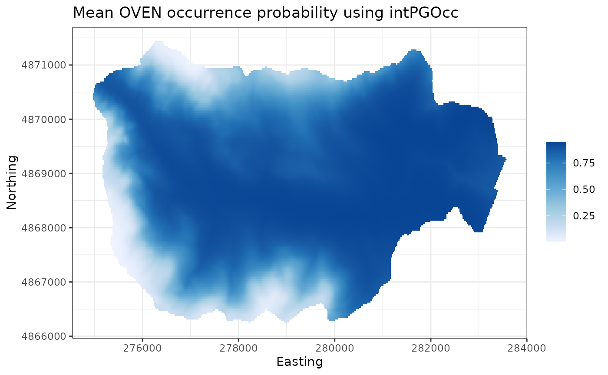
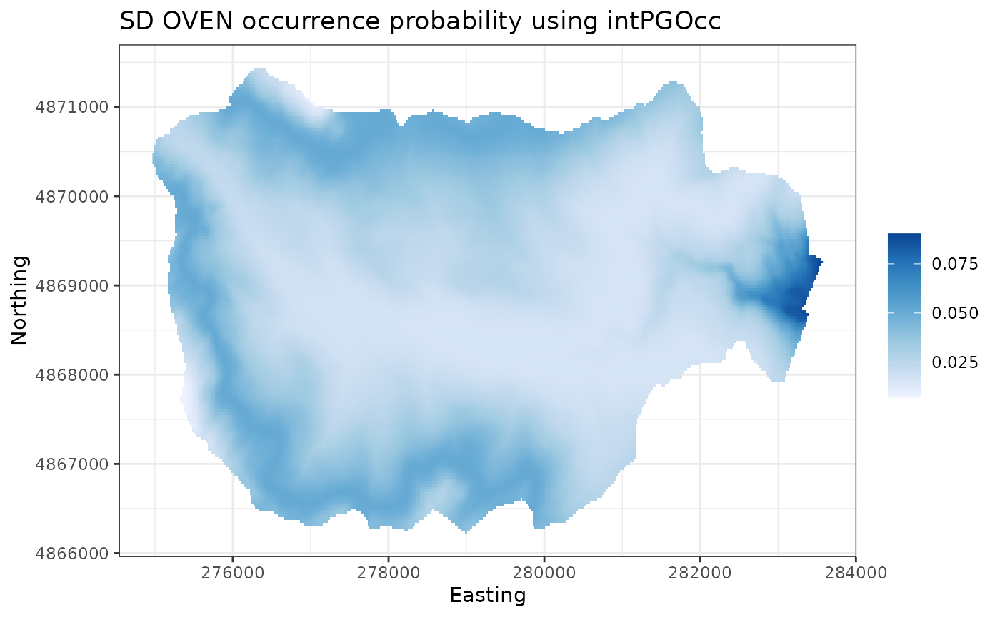

Fitting occupancy models with spOccupancy
Jeffrey W. Doser, Andrew O. Finley, Elise F. Zipkin
November 04, 2021
Source:vignettes/modelFitting.Rmd
modelFitting.RmdIntroduction
This vignette provides worked examples and explanations for fitting single species, multispecies, and integrated occupancy models available in the spOccupancy R package. We will provide step by step examples on how to fit the following models:
- Occupancy model using
PGOcc(). - Spatial occupancy model using
spPGOcc(). - Multispecies occupancy model using
msPGOcc(). - Spatial multispecies occupancy model using
spMsPGOcc(). - Integrated occupancy model using
intPGOcc(). - Spatial integrated occupancy model using
spIntPGOcc().
We fit all occupancy models using Póly-Gamma data augmentation (Polson, Scott, and Windle 2013) for computational efficiency (Póly-Gamma is where the PG comes from in all spOccupancy model fitting function names). In this vignette, we will provide a brief description of each model, with full statistical details provided in a separate MCMC sampler vignette. We will also show how spOccupancy provides functions for posterior predictive checks as a Goodness of Fit assessment, model comparison and assessment using the Widely Applicable Information Criterion (WAIC), k-fold cross-validation, and out of sample predictions using standard R helper functions (e.g., predict()).
To get started, we load the spOccupancy package, as well as the coda package, which we will use for some MCMC diagnostics. We will also use the stars and ggplot2 packages to create some very basic plots of our results. We then set a seed so we can reproduce the same results.
Example data set: Foliage-gleaning birds at Hubbard Brook
As an example data set throughout this vignette, we will use data from twelve foliage-gleaning birds collected from point count surveys at Hubbard Brook Experimental Forest (HBEF) in New Hampshire, USA. Specific details on the data set are available on the Hubbard Brook website and Doser et al. (2021). The data are provided in the spOccupancy package and are loaded with data(hbef2015). Detection-nondetection data were collected at 373 sites over three replicate point count surveys, each of 10 minutes in length and a detection radius of 100m. Some sites were not visited for all three replicates. Additional information on the data set (including individual species in the data set) can be viewed in the man page using help(hbef2015).
List of 4
$ y : num [1:12, 1:373, 1:3] 0 0 0 0 0 1 0 0 0 0 ...
..- attr(*, "dimnames")=List of 3
.. ..$ : chr [1:12] "AMRE" "BAWW" "BHVI" "BLBW" ...
.. ..$ : chr [1:373] "1" "2" "3" "4" ...
.. ..$ : chr [1:3] "1" "2" "3"
$ occ.covs: num [1:373, 1] 475 494 546 587 588 ...
..- attr(*, "dimnames")=List of 2
.. ..$ : NULL
.. ..$ : chr "Elevation"
$ det.covs:List of 2
..$ day: num [1:373, 1:3] 156 156 156 156 156 156 156 156 156 156 ...
..$ tod: num [1:373, 1:3] 330 346 369 386 409 425 447 463 482 499 ...
$ coords : num [1:373, 1:2] 280000 280000 280000 280001 280000 ...
..- attr(*, "dimnames")=List of 2
.. ..$ : chr [1:373] "1" "2" "3" "4" ...
.. ..$ : chr [1:2] "X" "Y"The object hbef2015 is a list comprised of the detection-nondetection data (y), covariates on the occurrence portion of the model (occ.covs), covariates on the detection portion of the model (det.covs), and the spatial coordinates of each site (coords) for use in spatial occupancy models and plotting. This list is in the exact format required for input to spOccupancy model functions. hbef2015 contains data on 12 species in the three-dimensional array y, where the dimensions of y correspond to species (12), sites (373), and replicates (3). For single species occupancy models in Section 2 and 3, we will only use data on the charming Ovenbird (OVEN; Seiurus aurocapilla), so we next subset the hbef2015 list to only include data from OVEN in a new object ovenHBEF.
sp.names <- dimnames(hbef2015$y)[[1]]
ovenHBEF <- hbef2015
ovenHBEF$y <- ovenHBEF$y[sp.names == "OVEN", , ]
table(ovenHBEF$y)
0 1
518 588 We see OVEN is detected at little over half of all site-replicate combinations.
Single species occupancy models
Basic model description
Let \(z_j\) be the true presence (1) or absence (0) of a species at site \(j\), with \(j = 1, \dots, J\). For our OVEN example, \(J = 373\). Following the basic occupancy model (MacKenzie et al. 2002), we assume this latent occurrence process arises from a Bernoulli process following
\[\begin{equation} \begin{split} &z_j \sim \text{Bernoulli}(\psi_j), \\ &\text{logit}(\psi_j) = \boldsymbol{x}'_j \cdot \boldsymbol{\beta}, \end{split} \end{equation}\]
where \(\psi_j\) is the probability of occurrence at site \(j\), which is a function of site-specific covariates \(\boldsymbol{X}\) and a vector of regression coefficients (\(\boldsymbol{\beta}\)).
We do not directly observe \(z_j\) and rather we observe an imperfect representation of the latent occurrence process as a result of imperfect detection (i.e., the failure to detect a species at a site when it is truly present). Let \(y_{j, k}\) be the observed detection (1) or nondetection (0) of a species of interest at site \(j\) during replicate \(k\) for each of \(k = 1, \dots, K_j\) replicates. Note that the number of replicates, \(K_j\) can vary by site. For our OVEN example, the maximum value of \(K_j\) is three. We envision the detection-nondetection data as arising from a Bernoulli process conditional on the true latent occurrence process:
\[\begin{equation} \begin{split} &y_{j, k} \sim \text{Bernoulli}(p_{j, k} \cdot z_j), \\ &\text{logit}(p_{j, k}) = \boldsymbol{v}'_{j, k} \cdot \boldsymbol{\alpha}, \end{split} \end{equation}\]
where \(p_{j, k}\) is the probability of detecting a species at site \(j\) during replicate \(k\) (given it is present at site \(j\)), which is a function of site and replicate specific covariates \(\boldsymbol{V}\) and a vector of regression coefficients (\(\boldsymbol{\alpha}\)).
To complete the Bayesian specification of the model, we assign multivariate normal priors for the occurrence (\(\boldsymbol{\beta}\)) and detection (\(\boldsymbol{\alpha}\)) regression coefficients. To yield an efficient implementation of the occupancy model using a logit link function, we use Póly-Gamma data augmentation (Polson, Scott, and Windle 2013), which is described in depth in a separate MCMC sampler vignette.
Fitting single species occupancy models with PGOcc()
The PGOcc() function fits single species occupancy models using Póly-Gamma latent variables, which makes it more efficient than standard Bayesian implementations of occupancy models using a logit link function (Clark and Altwegg 2019; Polson, Scott, and Windle 2013). PGOcc() has the following arguments:
PGOcc(occ.formula, det.formula, data, inits, priors, n.samples,
n.omp.threads = 1, verbose = TRUE, n.report = 100,
n.burn = round(.10 * n.samples), n.thin = 1,
k.fold, k.fold.threads = 1, k.fold.seed, ...)The first two arguments, occ.formula and det.formula, use standard R model syntax to denote the covariates included in the occurrence and detection portions of the model, respectively. Only the right hand side of the formulas are included. Random intercepts can be included in both the occurrence and detection portions of the single-species occupancy model using lme4 syntax (Bates et al. 2015). For example, to include a random intercept for different observers in the detection portion of the model, we would include (1 | observer) in the det.formula, where observer indicates the specific observer for each data point. The names of variables given in the formulas should correspond to those found in data, which is a list consisting of the following tags: y (detection-nondetection data), occ.covs (occurrence covariates), det.covs (detection covariates). y should be stored as a sites x replicate matrix, occ.covs as a matrix or data frame with site-specific covariate values, and det.covs as a list with each list element corresponding to a covariate to include in the detection portion of the model. Covariates on detection can vary by site and/or survey, and so these covariates may be specified as a site by survey matrix for survey-level covariates or as a one-dimensional vector for survey level covariates. The ovenHBEF list is already in the required format. Here we will model OVEN occurrence as a function of linear and quadratic elevation and will include three observational covariates (linear and quadratic day of survey, time of day of survey) on the detection portion of the model. We standardize all covariates by using the scale() function in our model specification, and use the I() function to specify quadratic effects:
oven.occ.formula <- ~ scale(Elevation) + I(scale(Elevation)^2)
oven.det.formula <- ~ scale(day) + scale(tod) + I(scale(day)^2)
# Check out the format of ovenHBEF
str(ovenHBEF)List of 4
$ y : num [1:373, 1:3] 1 1 0 1 0 0 1 0 1 1 ...
..- attr(*, "dimnames")=List of 2
.. ..$ : chr [1:373] "1" "2" "3" "4" ...
.. ..$ : chr [1:3] "1" "2" "3"
$ occ.covs: num [1:373, 1] 475 494 546 587 588 ...
..- attr(*, "dimnames")=List of 2
.. ..$ : NULL
.. ..$ : chr "Elevation"
$ det.covs:List of 2
..$ day: num [1:373, 1:3] 156 156 156 156 156 156 156 156 156 156 ...
..$ tod: num [1:373, 1:3] 330 346 369 386 409 425 447 463 482 499 ...
$ coords : num [1:373, 1:2] 280000 280000 280000 280001 280000 ...
..- attr(*, "dimnames")=List of 2
.. ..$ : chr [1:373] "1" "2" "3" "4" ...
.. ..$ : chr [1:2] "X" "Y"Next, we specify the initial values for the MCMC sampler in inits. PGOcc() (and all other spOccupancy model fitting functions) will set initial values by default, but here we will do this explicitly. The default initial values for occurrence and detection regression coefficients are random values from the prior distributions, while the default initial values for the latent occurrence effects are set to 1 if the species was observed at the site and 0 otherwise. Initial values are specified in a list with the following tags: z (latent occurrence values), alpha (detection regression coefficients), and beta (occurrence regression coefficients). Below we set all initial values of the regression coefficients to 0, and set initial values for z based on the detection-nondetection data matrix. For the occurrence (beta) and detection (alpha) regression coefficients, the initial values are passed in either as a vector of length corresponding to the number of estimated parameters, or as a single value if setting the same initial value for all parameters. Below we take the latter approach. To specify the initial values for the latent occurrence at each site (z), we must ensure we set the value to 1 at all sites where OVEN was detected, because if we detect OVEN at a site then the value of z is 1 with complete certainty. If the initial value for z at a site is set to 0 when the species was detected there, the occupancy model will fail. spOccupancy will provide a clear error message if the supplied initial values for z are invalid. Below we use the raw detection-nondetection data and the apply() function to set the initial values to 1 if OVEN was detected at that site and 0 otherwise.
We next specify the priors for the occurrence and detection regression coefficients. The Póly-Gamma data augmentation algorithm employed by spOccupancy assumes normal priors for both the detection and occurrence regression coefficients. These priors are specified in a list with tags beta.normal for occurrence and alpha.normal for detection parameters. Each list element is then itself a list, with the first element of the list consisting of the hypermeans for each coefficient and the second element of the list consisting of the hypervariances for each coefficient. Alternatively, the hypermean and hypervariances can be specified as a single value if the same prior is used for all regression coefficients. By default, spOccupancy will set the hypermeans to 0 and the hypervariances to 2.72, which corresponds to a relatively flat prior on the probability scale (0, 1) (Lunn et al. 2013). We will use these default priors here, but we specify them explicitly below for clarity
oven.priors <- list(alpha.normal = list(mean = 0, var = 2.72),
beta.normal = list(mean = 0, var = 2.72))Our last step is to specify the number of samples to run the MCMC (n.samples), the amount of burn-in (n.burn), and how often we want to thin the posterior samples (n.thin). For a simple single species occupancy model, we shouldn’t need too many samples and will only need a small amount of burn-in and thinning.
n.samples <- 5000
n.burn <- 3000
n.thin <- 2We are now nearly set to run the occupancy model. Single species occupancy models are fast, and so we set n.omp.threads = 1 to indicate we won’t use multiple threads to run the model. For more time consuming models, we can set n.omp.threads to a number greater than 1 and smaller than the number of threads on the computer you are using. Note this argument will only use multiple threads if spOccupancy was compiled for OpenMP support. The verbose argument is a logical value indicating whether or not MCMC sampler progress is reported to the screen. If verbose = TRUE, sampler progress is reported after the specified number of iterations in the n.report argument. We set verbose = TRUE and n.report = 1000 to report progress after every 1000th MCMC iteration. The last three arguments to PGOcc() (k.fold, k.fold.threads, k.fold.seed) are used for performing k-fold cross-validation for model assessment, which we will display in a subsequent section. For now, we won’t specify the arguments, which will tell PGOcc() not to perform k-fold cross-validation.
out <- PGOcc(occ.formula = oven.occ.formula,
det.formula = oven.det.formula,
data = ovenHBEF,
inits = oven.inits,
n.samples = n.samples,
priors = oven.priors,
n.omp.threads = 1,
verbose = TRUE,
n.report = 1000,
n.burn = n.burn,
n.thin = n.thin)----------------------------------------
Preparing the data
----------------------------------------
----------------------------------------
Model description
----------------------------------------
Occupancy model with Polya-Gamma latent
variable fit with 373 sites.
Number of MCMC samples: 5000
Burn-in: 3000
Thinning Rate: 2
Total Posterior Samples: 1000
Source compiled with OpenMP support and model fit using 1 thread(s).
Sampling ...
Sampled: 1000 of 5000, 20.00%
-------------------------------------------------
Sampled: 2000 of 5000, 40.00%
-------------------------------------------------
Sampled: 3000 of 5000, 60.00%
-------------------------------------------------
Sampled: 4000 of 5000, 80.00%
-------------------------------------------------
Sampled: 5000 of 5000, 100.00%
names(out) [1] "beta.samples" "alpha.samples" "z.samples" "psi.samples"
[5] "X" "X.p" "y" "n.samples"
[9] "call" "n.post" "n.thin" "n.burn"
[13] "pRE" "psiRE" "run.time" PGOcc() returns a list of class PGOcc with a suite of different objects, many of them being coda::mcmc objects of posterior samples. Notice the “Preparing the data” printed section doesn’t have any information shown in it. spOccupancy model fitting functions will present messages when preparing the data for the model in this section, or will print out the default priors or initial values used when they are not specified in the function call. Here we specified everything explicitly so no information was reported.
For a nice summary of the regression parameters we can use summary() on the resulting PGOcc() object, which returns multiple quantiles of the posterior samples of each parameter.
summary(out)
Call:
PGOcc(occ.formula = oven.occ.formula, det.formula = oven.det.formula,
data = ovenHBEF, inits = oven.inits, priors = oven.priors,
n.samples = n.samples, n.omp.threads = 1, verbose = TRUE,
n.report = 1000, n.burn = n.burn, n.thin = n.thin)
Chain Information:
Total samples: 5000
Burn-in: 3000
Thin: 2
Total Posterior Samples: 1000
Occurrence:
2.5% 25% 50% 75% 97.5%
(Intercept) 1.6543 1.9580 2.1307 2.3087 2.6855
scale(Elevation) -2.3495 -1.8610 -1.6494 -1.4971 -1.2511
I(scale(Elevation)^2) -0.7537 -0.5443 -0.4280 -0.2993 0.0475
Detection:
2.5% 25% 50% 75% 97.5%
(Intercept) 0.5420 0.7069 0.7926 0.8794 1.0373
scale(day) -0.2416 -0.1430 -0.0925 -0.0377 0.0605
scale(tod) -0.2067 -0.0997 -0.0422 0.0078 0.1066
I(scale(day)^2) -0.1672 -0.0331 0.0291 0.0903 0.2226Note that all coefficients are printed on the logit scale. We see OVEN is fairly prominent in the forest given the large intercept value, and the negative linear and quadratic terms for Elevation suggest occurrence probability peaks at mid-elevations.
Convergence diagnostics
The posterior samples in the PGOcc object are coda::mcmc objects, which we can quickly assess for convergence visually using trace plots.
plot(out$beta.samples, density = FALSE)
plot(out$alpha.samples, density = FALSE)
For a complete analysis (i.e., in a peer-reviewed manuscript), we will likely want to more formally check for convergence, perhaps using the Gelman-Rubin R-hat diagnostic (Brooks and Gelman 1998). This requires running multiple chains at largely different initial values for the regression parameters. For a single species non-spatial occupancy model, we can accomplish this by running multiple chains sequentially (since they run really fast) with different initial values, then combining the output into a coda::mcmc.list object for use with the coda::gelman.diag function. Notice below we set verbose = FALSE to suppress the messages printed by PGOcc().
oven.inits <- list(alpha = 2,
beta = 2,
z = apply(ovenHBEF$y, 1, max, na.rm = TRUE))
out.2 <- PGOcc(occ.formula = oven.occ.formula,
det.formula = oven.det.formula,
data = ovenHBEF,
inits = oven.inits,
n.samples = n.samples,
priors = oven.priors,
n.omp.threads = 1,
verbose = FALSE,
n.report = 1000,
n.burn = n.burn,
n.thin = n.thin)
oven.inits <- list(alpha = -2,
beta = -2,
z = apply(ovenHBEF$y, 1, max, na.rm = TRUE))
out.3 <- PGOcc(occ.formula = oven.occ.formula,
det.formula = oven.det.formula,
data = ovenHBEF,
inits = oven.inits,
n.samples = n.samples,
priors = oven.priors,
n.omp.threads = 1,
verbose = FALSE,
n.report = 1000,
n.burn = n.burn,
n.thin = n.thin)
# beta convergence
gelman.diag(mcmc.list(out$beta.samples, out.2$beta.samples,
out.3$beta.samples))Potential scale reduction factors:
Point est. Upper C.I.
(Intercept) 1 1.01
scale(Elevation) 1 1.02
I(scale(Elevation)^2) 1 1.00
Multivariate psrf
1.01
# alpha convergence
gelman.diag(mcmc.list(out$alpha.samples, out.2$alpha.samples,
out.3$alpha.samples))Potential scale reduction factors:
Point est. Upper C.I.
(Intercept) 1 1.00
scale(day) 1 1.01
scale(tod) 1 1.01
I(scale(day)^2) 1 1.00
Multivariate psrf
1All R-hat values are less than 1.1, indicating the chains have converged and we are in good shape to proceed.
Posterior predictive checks
The function ppcOcc() performs a posterior predictive check on all spOccupancy model objects as a Goodness of Fit (GoF) assessment. A good model should generate data that closely align with the observed data. If there are drastic differences in the true data from the model generated data, our model is likely not very useful (Hobbs and Hooten 2015). GoF assessments are more complicated using binary data, like detection-nondetection used in occupancy models, as standard approaches are not valid assessments for binary data (Broms, Hooten, and Fitzpatrick 2016; McCullagh 2019). Thus, any approach to assess model fit for detection-nondetection data must bin the raw values in some manner, and then perform a model fit assessment on the binned values. There are numerous ways we could envision binning the raw detection-nondetection values (Kéry and Royle 2015). In spOccupancy, a posterior predictive check broadly takes the following steps:
- Fit the model using a model-fitting function (in this case
PGOcc()), which generates fitted values for all detection-nondetection data points. - Bin the detection-nondetection data in some manner.
- Compute a fit statistic on the true data and the model generated fitted data.
- Compare the fit statistics for the true data and model generated data. If they are widely different, this suggests a lack of fit.
To peform a posterior predictive check, we send the resulting PGOcc model object as input to the ppcOcc() function, along with a fit statistic (fit.stat) and numeric value indicating how to group the data (group). Currently supported fit statistics include the Freeman-Tukey statistic and the Chi-Square statistic (freeman-tukey or chi-square, respectively, Kéry and Royle (2015)). Currently, ppcOcc() allows the user to group the data by row (site; group = 1) or column (replicate; group = 2). ppcOcc() will then return a set of posterior samples for the fit statistic (or discrepancy measure) using the observed data (fit.y) and model generated data set (fit.y.rep), summed across all data points. These values can be used with the summary() function to generate a Bayesian p-value. Bayesian p-values are sensitive to individual values, so we should also explore the discrepancy measures for each “grouped” data point. ppcOcc() returns a matrix of posterior quantiles for the fit statistic for both the observed (fit.y.group.quants) and model generated data (fit.y.rep.group.quants) for each “grouped” data point.
We next perform a posterior predictive check using the Freeman-Tukey statistic grouping the data by sites. We summarize the posterior predictive check with the summary() function, which reports a Bayesian p-value. A Bayesian p-value that hovers around 0.5 indicates adequate model fit, while values less than 0.1 or greater than 0.9 suggest our model does not fit the data well (Hobbs and Hooten 2015).
Call:
ppcOcc(object = out, fit.stat = "freeman-tukey", group = 1)
Chain Information:
Total samples: 5000
Burn-in: 3000
Thin: 2
Total Posterior Samples: 1000
Bayesian p-value: 0.174
Fit statistic: freeman-tukey The Bayesian p-value is the proportion of posterior samples of the fit statistic of the model generated data that are greater than the corresponding fit statistic of the true data, summed across all “grouped” data points. We can create a visual representation of the Bayesian p-value as follows (Kéry and Royle 2015):
ppc.df <- data.frame(fit = ppc.out$fit.y,
fit.rep = ppc.out$fit.y.rep,
color = 'lightskyblue1')
ppc.df$color[ppc.df$fit.rep > ppc.df$fit] <- 'lightsalmon'
plot(ppc.df$fit, ppc.df$fit.rep, bg = ppc.df$color, pch = 21,
ylab = 'Fit', xlab = 'True')
lines(ppc.df$fit, ppc.df$fit, col = 'black')
Our Bayesian p-value is above 0.1 indicating no lack of fit, although the above plot indicates most of the fit statistics are smaller for the fitted data than the true data. Relying solely on the Bayesian p-value as an assessment of model fit is not always a great option, as individual data points can have an overbearing influence on the resulting summary value. Instead of summing across all data points for a single discrepancy measure, ppcOcc() also allows us to explore discrepancy measures on a “grouped” point by point basis. The resulting ppcOcc object will contain the objects fit.y.group.quants and fit.y.rep.group.quants, which contain quantiles of the posterior distributions for the discrepancy measures of each grouped data point. Below we plot the difference in the discrepancy measure between the fitted and true data across each of the sites.
diff.fit <- ppc.out$fit.y.rep.group.quants[3, ] - ppc.out$fit.y.group.quants[3, ]
plot(diff.fit, pch = 19, xlab = 'Site ID', ylab = 'Fitted - True Discrepancy')
We see there are a few sites where the true discrepancy is much larger than the discrepancy under the fitted data. Here we will ignore this, but in a real analysis we would explore these sites further to see what could explain this pattern (e.g., are the sites close together in space?).
Model selection using WAIC and k-fold cross-validation
Posterior predictive checks allow us to assess how well our model fits the data, but they are not very useful if we want to compare multiple competing models and ultimately select a final model based on some criterion. Bayesian model selection is very much a constantly changing field. See Hooten and Hobbs (2015) for an accessible overview of Bayesian model selection for ecologists.
For Bayesian hierarchical models like occupancy models, the most common Bayesian model selection criterion, DIC, is not applicable (Hooten and Hobbs 2015). Instead, we can use the Widely Applicable Information Criterion (Watanabe 2010) to compare a set of models and select the best performing model according to the WAIC for final analysis.
The WAIC is calculated for all spOccupancy model objects using the function waicOcc(). We calculate the WAIC as
\[ \text{WAIC} = -2 \times (\text{elpd} - \text{pD}), \]
where elpd is the expected log pointwise predictive density and PD is the effective number of parameters. We calculate elpd by calculating the likelihood for each posterior sample, taking the mean of these likelihoods, taking the log of the mean of the likelihoods, and summing these values across all sites. We calculate the effective number of parameters by calculating the variance of the log likelihood for each site taken over all posterior samples, and then summing these values across all sites. See Appendix S1 from Broms, Hooten, and Fitzpatrick (2016) for more details.
We calculate the WAIC using waicOcc() for our OVEN model below.
waicOcc(out) elpd pD WAIC
-632.943683 6.231819 1278.351004 Next we rerun the OVEN model, but this time we assume occurrence is constant across the HBEF, and subsequently compare the WAIC value to the full model
out.small <- PGOcc(occ.formula = ~ 1,
det.formula = oven.det.formula,
data = ovenHBEF,
inits = oven.inits,
n.samples = n.samples,
priors = oven.priors,
n.omp.threads = 1,
verbose = FALSE,
n.burn = n.burn,
n.thin = n.thin)
waicOcc(out.small) elpd pD WAIC
-692.050766 4.804476 1393.710483 Smaller values of WAIC indicate models with better performance. We see the WAIC for the model with elevation is smaller than the intercept only model, indicating elevation is an important predictor for OVEN occurrence in HBEF.
When focused primarily on predictive performance, a k-fold cross-validation approach is another attractive (but more computationally intensive) alternative to compare a series of models, especially since WAIC may not always be reliable for occupancy models (Broms, Hooten, and Fitzpatrick 2016). In spOccupancy, k-fold cross-validation is accomplished using the arguments k.fold, k.fold.threads, and k.fold.seed in the model fitting function. A k-fold cross validation approach requires fitting a model \(k\) times, where each time the model is fit using \(J / k\) data points, where \(J\) is the total number of sites surveyed at least once in the data set. Each time the model is fit, it uses a different portion of the data and then predicts the remaining \(J - J/k\) hold out values. Because the data are not used to fit the model, this yields true samples from the posterior predictive distribution that we can use to assess the predictive capacity of the model.
As a measure of out-of-sample predictive performance, we use the deviance as a cross-validation score following Hooten and Hobbs (2015). For K-fold cross-validation, our scoring function is computed as
\[\begin{equation} -2 \sum_{k = 1}^K \text{log}\Bigg(\frac{\sum_{q = 1}^Q \text{Bernoulli}(\boldsymbol{y}_k \mid \boldsymbol{p}^{(q)}\boldsymbol{z}_k^{(q)})}{Q}\Bigg), \end{equation}\]
where \(\boldsymbol{p}^{(q)}\) and \(\boldsymbol{z}_k^{(q)}\) are MCMC samples of detection probability and latent occurrence, respectively, arising from a model that is fit without the observations \(\boldsymbol{y}_k\), and \(Q\) is the total number of posterior samples from the MCMC sampler. The -2 is used so that smaller values indicate better model fit, which aligns with most information criteria used for model assessment (like the WAIC implemented using waicOcc()).
The final three arguments (k.fold, k.fold.threads, k.fold.seed) in PGOcc() control whether or not k-fold cross validation is performed following the complete fit of the model using the entire data set. The k.fold argument indicates the number of \(k\) folds to use for cross-validation. If k.fold is not specified, cross-validation is not performed and k.fold.threads and k.fold.seed are ignored. The k.fold.threads argument indicates the number of threads to use for running the \(k\) models in parallel across multiple threads. Parallel processing is accomplished using the R packages foreach and doParallel. Specifying k.fold.threads > 1 can substantially decrease run time since it allows for models to be fit simultaneously on different threads rather than sequentially. The k.fold.seed indicates the seed used to randomly split the data into \(k\) groups. This is by default set to 100.
Below we refit the occupancy model with elevation (linear and quadratic) as an occurrence predictor this time performing 4-fold cross-validation. We set k.fold = 4 to perform 4-fold cross-validation and k.fold.threads = 1 to run the model using 1 thread. Normally we would set k.fold.threads = 4, but using multiple threads leads to complications when compiling this vignette, so we leave that to you to explore the computational improvements of performing cross-validation across multiple cores.
out.k.fold <- PGOcc(occ.formula = oven.occ.formula,
det.formula = oven.det.formula,
data = ovenHBEF,
inits = oven.inits,
n.samples = n.samples,
priors = oven.priors,
n.omp.threads = 1,
verbose = TRUE,
n.report = 1000,
n.burn = n.burn,
n.thin = n.thin,
k.fold = 4,
k.fold.threads = 1)----------------------------------------
Preparing the data
----------------------------------------
----------------------------------------
Model description
----------------------------------------
Occupancy model with Polya-Gamma latent
variable fit with 373 sites.
Number of MCMC samples: 5000
Burn-in: 3000
Thinning Rate: 2
Total Posterior Samples: 1000
Source compiled with OpenMP support and model fit using 1 thread(s).
Sampling ...
Sampled: 1000 of 5000, 20.00%
-------------------------------------------------
Sampled: 2000 of 5000, 40.00%
-------------------------------------------------
Sampled: 3000 of 5000, 60.00%
-------------------------------------------------
Sampled: 4000 of 5000, 80.00%
-------------------------------------------------
Sampled: 5000 of 5000, 100.00%
----------------------------------------
Cross-validation
----------------------------------------Performing 4-fold cross-validation using 1 thread(s).We subsequently refit the intercept only occupancy model, and compare the deviance metrics from the 4-fold cross-validation.
# Model fitting information is surpressed for space.
out.int.k.fold <- PGOcc(occ.formula = ~ 1,
det.formula = oven.det.formula,
data = ovenHBEF,
inits = oven.inits,
n.samples = n.samples,
priors = oven.priors,
n.omp.threads = 1,
verbose = FALSE,
n.report = 1000,
n.burn = n.burn,
n.thin = n.thin,
k.fold = 4,
k.fold.threads = 1)The cross-validation metric (model deviance) is stored in the k.fold.deviance tag of the resulting model object.
out.k.fold$k.fold.deviance[1] 1516.744
out.int.k.fold$k.fold.deviance[1] 1531.726Similar to the results from the WAIC, we see the model including elevation with a predictor outperforms the intercept only model.
Prediction
All resulting model objects from spOccupancy model functions can be used with predict() to generate a series of posterior predictive samples at non-sampled locations, given the values of all covariates used in the model fitting process. The object hbefElev (provided in the spOccupancy package) contains elevation values at a 30x30m resolution from the National Elevation Dataset across the entire HBEF. We load the data below
'data.frame': 46090 obs. of 3 variables:
$ val : num 914 916 918 920 922 ...
$ Easting : num 276273 276296 276318 276340 276363 ...
$ Northing: num 4871424 4871424 4871424 4871424 4871424 ...The column val contains the elevation values, while Easting and Northing contain the spatial coordinates that we will use for plotting. We can obtain posterior predictive samples for the occurrence probabilities at these sites by using the predict() function and our PGOcc model object. Given that we standardized the elevation values when we fit the model, we need to standardize the elevation values for prediction using the mean and standard deviation of the values used to fit the data.
elev.pred <- (hbefElev$val - mean(ovenHBEF$occ.covs[, 1])) / sd(ovenHBEF$occ.covs[, 1])
X.0 <- cbind(1, elev.pred, elev.pred^2)
out.pred <- predict(out, X.0)For PGOcc objects, the predict function takes two arguments: (1) the PGOcc model object; and (2) a matrix or data frame consisting of the design matrix for the prediction locations (including an intercept). The resulting object consists of posterior predictive samples for the latent occurrence probabilities (psi.0.samples) and latent occurrence values (z.0.samples). The beauty of the Bayesian paradigm is that these predictions all have fully propagated uncertainty. We can use these values to create plots of the predicted mean occurrence values, as well as their standard deviation.
plot.dat <- data.frame(x = hbefElev$Easting,
y = hbefElev$Northing,
mean.psi = apply(out.pred$psi.0.samples, 2, mean),
sd.psi = apply(out.pred$psi.0.samples, 2, sd),
stringsAsFactors = FALSE)
dat.stars <- st_as_stars(plot.dat, dims = c('x', 'y'))
ggplot() +
geom_stars(data = dat.stars, aes(x = x, y = y, fill = mean.psi)) +
scale_fill_distiller(palette = 'Blues', direction = 1, na.value = 'transparent') +
labs(x = 'Easting', y = 'Northing', fill = '',
title = 'Mean OVEN occurrence probability') +
theme_bw()
ggplot() +
geom_stars(data = dat.stars, aes(x = x, y = y, fill = sd.psi)) +
scale_fill_distiller(palette = 'Blues', direction = 1, na.value = 'transparent') +
labs(x = 'Easting', y = 'Northing', fill = '',
title = 'SD OVEN occurrence probability') +
theme_bw()
Single species spatial occupancy models
Basic model description
When working across large spatial domains, accounting for residual spatial autocorrelation in species distributions can often improve predictive performance, leading to more accurate species distribution maps (Guélat and Kéry 2018; Lany et al. 2020). We extend the basic single species occupancy model to incorporate a spatial Gaussian Process that accounts for unexplained spatial variation in species occurrence across a region of interest. The species-specific occurrence probability at site \(j\), \(\psi_j\), now takes the form
\[\begin{equation} \text{logit}(\psi_j) = \boldsymbol{x}'_j \cdot \boldsymbol{\beta} + \omega_j, \end{equation}\]
where w\(_j\) is a realization from a zero-mean spatial Gaussian Process, i.e.,
\[\begin{equation} \boldsymbol{\omega} \sim N(\boldsymbol{0}, \boldsymbol{\Sigma}(\boldsymbol{\boldsymbol{s}, \boldsymbol{s}', \theta})). \end{equation}\]
We define \(\boldsymbol{\Sigma}(\boldsymbol{s}, \boldsymbol{s}', \boldsymbol{\theta})\) as a \(J \times J\) covariance matrix that is a function of the distances between any pair of site coordinates \(\boldsymbol{s}\) and \(\boldsymbol{s}'\) and a set of parameters \((\boldsymbol{\theta})\) that govern the spatial process. The vector \(\boldsymbol{\theta}\) is equal to \(\boldsymbol{\theta} = \{\sigma^2, \phi, \nu\}\), where \(\sigma^2\) is a spatial variance parameter, \(\phi\) is a spatial decay parameter, and \(\nu\) is a spatial smoothness parameter. \(\nu\) is only specified when using a Matern correlation function.
The detection portion of the occupancy model remains unchanged from the non-spatial occupancy model. Single species spatial occupancy models, like all models in spOccupancy are fit using Póly-Gamma data augmentation (see MCMC sampler vignette for details).
When the number of sites is moderately large, say 1000, the above described spatial Gaussian process model can be drastically slow as a result of needing to take the inverse of the spatial covariance matrix \(\boldsymbol{\Sigma}(\boldsymbol{s}, \boldsymbol{s}', \boldsymbol{\theta})\) at each MCMC iteration. Numerous approximation methods exist to reduce this computational cost (Heaton et al. 2019). One attractive approach is the Nearest Neighbor Gaussian Process (NNGP; Datta et al. (2016)). Instead of modeling the spatial process using a full Gaussian Process, we replace the Gaussian Process prior specification with a NNGP, which leads to drastic increases in run time with nearly identical inference and prediction as the full Gaussian Process specification. See Datta et al. (2016), Finley et al. (2019), and the MCMC sampler vignette for additional statistical details on NNGPs and their implementation in spatial occupancy models.
Fitting single species spatial occupancy models with spPGOcc()
The function spPGOcc() fits single species spatial occupancy models using Póly-Gamma latent variables, where spatial autocorrelation is accounted for using a spatial Gaussian Process. spPGOcc() fits saptial occupancy models using either a full Gaussian process or an NNGP. See Finley, Datta, and Banerjee (2020) for details on using NNGPs with Póly-Gamma latent variables.
We will fit the same occupancy model for OVEN that we fit previously using PGOcc(), but we will now make the model spatially explicit by incorporating a spatial process with spPGOcc(). First, let’s take a look at the arguments for spPGOcc():
spPGOcc(occ.formula, det.formula, data, inits, n.batch,
batch.length, accept.rate = 0.43, priors,
cov.model = "exponential", tuning, n.omp.threads = 1,
verbose = TRUE, NNGP = FALSE, n.neighbors = 15,
search.type = "cb", n.report = 100,
n.burn = round(.10 * n.batch * batch.length),
n.thin = 1, k.fold, k.fold.threads = 1,
k.fold.seed = 100, ...)We will walk through each of the arguments to spPGOcc() in the context of our Ovenbird example. The occurrence (occ.formula) and detection (det.formula) formulas, as well as the list of data (data), take the same form as we saw in PGOcc, with the exception that random intercepts can only be specified in det.formula. Notice the coords matrix in the ovenHBEF list of data. We did not use this for PGOcc() but specifying the spatial coordinates in data is required for all spatially explicit models in spOccupancy.
oven.occ.formula <- ~ scale(Elevation) + I(scale(Elevation)^2)
oven.det.formula <- ~ scale(day) + scale(tod) + I(scale(day)^2)
str(ovenHBEF) # coords is required for spPGOcc.List of 4
$ y : num [1:373, 1:3] 1 1 0 1 0 0 1 0 1 1 ...
..- attr(*, "dimnames")=List of 2
.. ..$ : chr [1:373] "1" "2" "3" "4" ...
.. ..$ : chr [1:3] "1" "2" "3"
$ occ.covs: num [1:373, 1] 475 494 546 587 588 ...
..- attr(*, "dimnames")=List of 2
.. ..$ : NULL
.. ..$ : chr "Elevation"
$ det.covs:List of 2
..$ day: num [1:373, 1:3] 156 156 156 156 156 156 156 156 156 156 ...
..$ tod: num [1:373, 1:3] 330 346 369 386 409 425 447 463 482 499 ...
$ coords : num [1:373, 1:2] 280000 280000 280000 280001 280000 ...
..- attr(*, "dimnames")=List of 2
.. ..$ : chr [1:373] "1" "2" "3" "4" ...
.. ..$ : chr [1:2] "X" "Y"The initial values (inits) are again specified in a list. Valid tags for initial values now additionally include the parameters associated with the spatial random effects. These include: sigma.sq (spatial variance parameter), phi (spatial range parameter), w (the latent spatial random effects at each site), and nu (spatial smoothness parameter). nu is only specified if using a Matern covariance function (i.e., cov.model = 'matern'). spOccupancy supports four spatial covariance models (exponential, spherical, gaussian, and matern), which are specified in the cov.model argument. Here we will use an exponential covariance model. As a initial value for the spatial range parameter phi, we compute the mean distance between points in HBEF and then set it equal to 3 divided by this mean distance. When using an exponential covariance function, \(\frac{3}{\phi}\) is the effective range, or the distance at which the residual spatial correlation between two sites is 0.05 (Banerjee, Carlin, and Gelfand 2003). Thus our initial guess for this effective range is the average distance betweeen sites across HBEF.
# Distances between sites
dist.hbef <- dist(ovenHBEF$coords)
# Exponential covariance model
cov.model <- "exponential"
oven.inits <- list(alpha = 0,
beta = 0,
z = apply(ovenHBEF$y, 1, max, na.rm = TRUE),
sigma.sq = 2,
phi = 3 / mean(dist.hbef),
w = rep(0, nrow(ovenHBEF$y)))The next three arguments (n.batch, batch.length, and accept.rate) are all related to the Adaptive MCMC sampler we use to fit the model. Updates for the spatial range parameter (and smoothness parameter if cov.model = 'matern') require the use of a Metropolis Hastings algorithm. We implement an adaptive Metropois-Hastings algorithm discussed in Roberts and Rosenthal (2009). This algorithm adjusts the tuning values for each parameter that requires a Metropolis-Hastings update within the sampler itself. This process results in a more efficient sampler than if we were to fix the tuning parameters prior to fitting the model. The parameter accept.rate is the target acceptance rate for each parameter, and the algorithm will adjust the tuning parameters to hover around this value. The default value is 0.43, which we suggest leaving as is unless you have a good reason to change it. The tuning parameters are updated after a single “batch”. We must specify the total n.batch batches, where each “batch” consists of batch.length MCMC samples. Thus, the total number of MCMC samples is n.batch * batch.length. Typically, we set batch.length = 25 and then play around with n.batch until convergence is reached. Here we set n.batch = 400 for a total of 10000 MCMC samples. We will additionally specify a burn-in period of 2000 samples and a thinning rate of 8. We also need to specify an initial value for the tuning parameters for the spatial decay and smoothness parameters (if applicable). These values are sent as input in the form of a list with tags phi and nu. The initial tuning value can be any value greater than 0, but we recommend initial the value out around 0.5. After some initial runs of the model, if you notice the final acceptance rate of a parameter is much larger or smaller than the target acceptance rate (accept.rate), you can then change the initial tuning value to get closer to the target rate. Here we set the initial tuning value for phi to 1 after some initial runs of the model.
batch.length <- 25
n.batch <- 400
n.burn <- 2000
n.thin <- 8
oven.tuning <- list(phi = 1)Priors are again specified in a list in the argument priors. We assume an inverse gamma prior for the spatial variance parameter sigma.sq (tag is sigma.sq.ig), and uniform priors for the spatial decay parameter phi and smoothness parameter nu (if Matern), with the associated tags phi.unif and nu.unif. The hyperparameters of the inverse Gamma are passed as a vector of length two, with the first and second elements corresponding to the shape and scale, respectively. The lower and upper bounds of the uniform distribution are passed in as a two-element vector for the uniform priors.
The priors for the spatial parameters in a spatially-explicit model must be at least weakly informative for the model to converge (Banerjee, Carlin, and Gelfand 2003). For the inverse-Gammma prior on the spatial variance, we typically set the shape parameter to 2 and the scale parameter equal to our best guess of the spatial variance. Based on our previous work with these data, we expect the residual spatial variation to be relatively small, and so we set the scale parameter below to 1. For the spatial decay parameter, we determine the bounds of the uniform distribution by computing the smallest distance between sites and the largest distance between sites. We then set the lower bound of the uniform to 3/max and the upper bound to 3/min, where min and max correspond to the predetermined distances between sites.
min.dist <- min(dist.hbef)
max.dist <- max(dist.hbef)
oven.priors <- list(beta.normal = list(mean = 0, var = 2.72),
alpha.normal = list(mean = 0, var = 2.72),
sigma.sq.ig = c(2, 1),
phi.unif = c(3/max.dist, 3/min.dist))The argument n.omp.threads specifies the number of threads to use for parallelization, while verbose specifies whether or not to print the progress of the sampler. We highly recommend setting verbose = TRUE for all spatial models to ensure the adaptive MCMC is working as you want. The argument n.report specifies the interval to report the Metropolis sampler acceptance. Note that n.report is specified in terms of batches, not the overall number of samples. Below we set n.report = 100, which will result in information on the acceptance rate and tuning parameters every 100th batch.
n.omp.threads <- 1
verbose <- TRUE
n.report <- 100The parameters NNGP, n.neighbors, and search.type relate to whether or not you want to fit the model with a Gaussian Process or NNGP. The argument NNGP is a logical value indicating whether to fit the model with an NNGP (TRUE) or a regular Gaussian Process (FALSE). For data sets that have more than 1000 locations, using an NNGP will have substantial increases in run time. Even for more modest size data sets (like the HBEF data set), using an NNGP will be quite a bit faster (especially for multispecies models). Unless you are concerned about the NNGP approximation for some reason, we recommend setting NNGP = TRUE, which is the default. The argument n.neighbors and search.type specify the number of neighbors used in the NNGP and the nearest neighbor search algorithm, respectively, to use for the NNGP model. Generally, the default values of these arguments will be adequate. Datta et al. (2016) showed that setting n.neighbors = 15 is usually sufficient, although for certain data sets a good approximation can be achieved with as small as five neighbors, which could substantially decrease run time. We generally recommend leaving search.type = "cb", as this results in a fast code book nearest neighbor search algorithm. However, details on when you may want to change this are described in Finley, Datta, and Banerjee (2020). We will run an NNGP model using the default value for search.type and setting n.neighbors = 5, which we have found in exploratory analysis to closely approximate a full Gaussian Process.
We now fit the model (without k-fold cross-validation) and summarize the results using summary().
out.sp <- spPGOcc(occ.formula = oven.occ.formula,
det.formula = oven.det.formula,
data = ovenHBEF,
inits = oven.inits,
n.batch = n.batch,
batch.length = batch.length,
priors = oven.priors,
cov.model = cov.model,
NNGP = TRUE,
n.neighbors = 5,
tuning = oven.tuning,
n.report = n.report,
n.burn = n.burn,
n.thin = n.thin)----------------------------------------
Preparing the data
----------------------------------------
----------------------------------------
Building the neighbor list
----------------------------------------
----------------------------------------
Building the neighbors of neighbors list
----------------------------------------
----------------------------------------
Model description
----------------------------------------
NNGP Occupancy model with Polya-Gamma latent
variable fit with 373 sites.
Number of MCMC samples: 10000 (400 batches of length 25)
Burn-in: 2000
Thinning Rate: 8
Total Posterior Samples: 1000
Using the exponential spatial correlation model.
Using 5 nearest neighbors.
Source compiled with OpenMP support and model fit using 1 thread(s).
Adaptive Metropolis with target acceptance rate: 43.0
Sampling ...
Batch: 100 of 400, 25.00%
parameter acceptance tuning
phi 32.0 0.40252
-------------------------------------------------
Batch: 200 of 400, 50.00%
parameter acceptance tuning
phi 48.0 0.32956
-------------------------------------------------
Batch: 300 of 400, 75.00%
parameter acceptance tuning
phi 32.0 0.30422
-------------------------------------------------
Batch: 400 of 400, 100.00%
class(out.sp)[1] "spPGOcc"
names(out.sp) [1] "beta.samples" "alpha.samples" "z.samples" "psi.samples"
[5] "theta.samples" "w.samples" "tune" "accept"
[9] "coords" "X" "X.p" "y"
[13] "call" "n.samples" "n.neighbors" "cov.model.indx"
[17] "type" "n.post" "n.thin" "n.burn"
[21] "pRE" "run.time"
summary(out.sp)
Call:
spPGOcc(occ.formula = oven.occ.formula, det.formula = oven.det.formula,
data = ovenHBEF, inits = oven.inits, priors = oven.priors,
tuning = oven.tuning, cov.model = cov.model, NNGP = TRUE,
n.neighbors = 5, n.batch = n.batch, batch.length = batch.length,
n.report = n.report, n.burn = n.burn, n.thin = n.thin)
Chain Information:
Total samples: 10000
Burn-in: 2000
Thin: 8
Total Posterior Samples: 1000
Occurrence:
2.5% 25% 50% 75% 97.5%
(Intercept) 1.5249 2.4917 2.8682 3.3147 4.2481
scale(Elevation) -3.7509 -2.8473 -2.4914 -2.1722 -1.5649
I(scale(Elevation)^2) -1.4591 -0.9850 -0.7420 -0.5113 -0.0794
Detection:
2.5% 25% 50% 75% 97.5%
(Intercept) 0.5722 0.7394 0.8219 0.9057 1.0554
scale(day) -0.2409 -0.1439 -0.0880 -0.0351 0.0607
scale(tod) -0.2148 -0.1015 -0.0520 0.0024 0.1083
I(scale(day)^2) -0.1694 -0.0396 0.0231 0.0846 0.2105
Covariance:
2.5% 25% 50% 75% 97.5%
sigma.sq 1.7814 3.7877 5.385 7.7111 15.3792
phi 0.0007 0.0015 0.002 0.0026 0.0039We see spPGOcc() returns a list of class spPGOcc and consists of posterior samples for all parameters. Note that posterior samples for spatial parameters are stored in the list element theta.samples.
Convergence diagnostics
Convergence diagnostics, posterior predictive checks, model selection, and out-of-sample prediction all proceed analogously to what we saw with the non-spatial occupancy model using PGOcc().
plot(out.sp$beta.samples, density = FALSE)
plot(out.sp$alpha.samples, density = FALSE)
plot(out.sp$theta.samples, density = FALSE)We should run the chain for a bit longer to ensure convergence of the spatial parameters, but we’ll resist doing so for now. Convergence can be more formally assessed using the Gelman-Rubin diagnostic as done for the nonspatial model.
Posterior predictive checks
For our posterior predictive check, we send the spPGOcc model object to the ppcOcc() function, this time grouping by replicate (group = 2) instead of by site (group = 1).
Call:
ppcOcc(object = out.sp, fit.stat = "freeman-tukey", group = 2)
Chain Information:
Total samples: 10000
Burn-in: 2000
Thin: 8
Total Posterior Samples: 1000
Bayesian p-value: 0.768
Fit statistic: freeman-tukey The Bayesian p-value indicates adequate model fit of the spatial occupancy model.
Model selection using WAIC and k-fold cross-validation
We next use the waicOcc() function to compute the WAIC, which we can compare to the non-spatial model to assess the benefit of incorporating the spatial random effects.
waicOcc(out.sp) elpd pD WAIC
-565.19055 48.21008 1226.80125
# Compare to non-spatial model
waicOcc(out) elpd pD WAIC
-632.943683 6.231819 1278.351004 We see the WAIC value for the spatial model is smaller than that of the nonspatial model, indicating that incorporation of the spatial random effects yields improvement in predictive performance.
k-fold cross-validation is accomplished by specifying the k.fold argument in spPGOcc just as we saw in PGOcc.
Prediction
Finally, we can perform out of sample prediction using the predict function just as before. Out of sample prediction for spatial models is more computationally intensive than non-spatial models, and so the predict function for spPGOcc class objects also has options for parallelization (n.omp.threads) and reporting sampler progress (verbose and n.report). Note that for spPGOcc(), you also need to supply the coordinates of the out of sample prediction locations in addition to the covariate values.
coords.0 <- as.matrix(hbefElev[, c('Easting', 'Northing')])
out.sp.pred <- predict(out.sp, X.0, coords.0, verbose = FALSE)
plot.dat <- data.frame(x = hbefElev$Easting,
y = hbefElev$Northing,
mean.psi = apply(out.sp.pred$psi.0.samples, 2, mean),
sd.psi = apply(out.sp.pred$psi.0.samples, 2, sd))
dat.stars <- st_as_stars(plot.dat, dims = c('x', 'y'))
ggplot() +
geom_stars(data = dat.stars, aes(x = x, y = y, fill = mean.psi)) +
scale_fill_distiller(palette = 'Blues', direction = 1, na.value = 'transparent') +
labs(x = 'Easting', y = 'Northing', fill = '',
title = 'Mean OVEN occurrence probability') +
theme_bw()
ggplot() +
geom_stars(data = dat.stars, aes(x = x, y = y, fill = sd.psi)) +
scale_fill_distiller(palette = 'Blues', direction = 1, na.value = 'transparent') +
labs(x = 'Easting', y = 'Northing', fill = '',
title = 'SD OVEN occurrence probability') +
theme_bw()
Comparing this to the non-spatial occupancy model, the spatial model appears to identify areas in HBEF with low OVEN occurrence that are not captured in the non-spatial model. We will resist trying to hypothesize what environmental factors could lead to these patterns.
Multispecies occupancy models
Basic model description
Let \(z_{i, j}\) be the true presence (1) or absence (0) of a species \(i\) at site \(j\), with \(j = 1, \dots, J\) and \(i = 1, \dots, N\). We assume the latent occurrence process arises from a Bernoulli process following
\[\begin{equation} \begin{split} &z_{i, j} \sim \text{Bernoulli}(\psi_{i, j}), \\ &\text{logit}(\psi_{i, j}) = \boldsymbol{x}'_{j} \cdot \boldsymbol{\beta}_i, \end{split} \end{equation}\]
where \(\psi_{i, j}\) is the probability of occurrence of species \(i\) at site \(j\), which is a function of site-specific covariates \(\boldsymbol{X}\) and a vector of species-specific regression coefficients (\(\boldsymbol{\beta}_i\)). The regression coefficients in multispecies occupancy models are envisioned as random effects arising from a common community level distribution:
\[\begin{equation} \boldsymbol{\beta}_i \sim \text{Normal}(\boldsymbol{\mu}_{\beta}, \boldsymbol{T}_{\beta}), \end{equation}\]
where \(\boldsymbol{\mu}_{\beta}\) is a vector of community level mean effects for each occurrence covariate effect (including the intercept) and \(\boldsymbol{T}_{\beta}\) is a diagonal matrix with diagonal elements \(\boldsymbol{\tau}^2_{\beta}\) that represent the variability of each occurrence covariate effect among species in the community.
We do not directly observe \(z_{i, j}\) and rather we observe an imperfect representation of the latent occurrence process. Let \(y_{i, j, k}\) be the observed detection (1) or nondetection (0) of a species \(i\) at site \(j\) during replicate \(k\) for each of \(k = 1, \dots, K_j\) replicates at each site \(j\). We envision the detection-nondetection data as arising from a Bernoulli process conditional on the true latent occurrence process:
\[\begin{equation} \begin{split} &y_{i, j, k} \sim \text{Bernoulli}(p_{i, j, k} \cdot z_{i, j}), \\ &\text{logit}(p_{i, j, k}) = \boldsymbol{v}'_{i, j, k} \cdot \boldsymbol{\alpha}_i, \end{split} \end{equation}\]
where \(p_{i, j, k}\) is the probability of detecting species \(i\) at site \(j\) during replicate \(k\) (given it is present at site \(j\)), which is a function of site and replicate specific covariates \(\boldsymbol{V}\) and a vector of species-specific regression coefficients (\(\boldsymbol{\alpha}_i\)). Similarly to the occurrence regression coefficients, the species specific detection coefficients are envisioned as random effects arising from a common community level distribution:
\[\begin{equation} \boldsymbol{\alpha}_i \sim \text{Normal}(\boldsymbol{\mu}_{\alpha}, \boldsymbol{T}_{\alpha}), \end{equation}\]
where \(\boldsymbol{\mu}_{\alpha}\) is a vector of community level mean effects for each detection covariate effect (including the intercept) and \(\boldsymbol{T}_{\alpha}\) is a diagonal matrix with diagonal elements \(\boldsymbol{\tau}^2_{\alpha}\) that represent the variability of each detection covariate effect among species in the community.
To complete the Bayesian specification of the model, we assign multivariate normal priors for the occurrence (\(\boldsymbol{\mu}_{\beta}\)) and detection (\(\boldsymbol{\mu}_{\alpha}\)) community-level regression coefficient means and independent inverse-Gamma priors for each element of \(\boldsymbol{\tau}^2_{\beta}\) and \(\boldsymbol{\tau}^2_{\alpha}\). We again use Póly-Gamma data augmentation to yield an efficient implementation of the multispecies occupancy model, which is described in depth in the MCMC sampler vignette.
Fitting multispecies occupancy models with msPGOcc()
spOccupancy uses nearly identical syntax for fitting multispecies models as it does for single species models and provides the same functionality for posterior predictive checks, model assessment and selection using WAIC and k-fold cross-validation, and out of sample prediction. The msPGOcc() function fits nonspatial multispecies occupancy models using Póly-Gamma latent variables, which results in substantial increases in run time compared to standard implementations of logit link multispecies occupancy models. msPGOcc() has exactly the same arguments as PGOcc():
msPGOcc(occ.formula, det.formula, data, inits, n.samples, priors,
n.omp.threads = 1, verbose = TRUE, n.report = 100,
n.burn = round(.10 * n.samples), n.thin = 1,
k.fold, k.fold.threads = 1, k.fold.seed, ...)We will again use the Hubbard Brook data in hbef2015 as an example data set, but we will now model occurrence for all 12 species in the community. Below we reload the hbef2015 data set to get a fresh copy.
data(hbef2015)We will model occurrence for all species as a function of linear and quadratic elevation, and detection as a function of linear and quadratic day of survey as well as the time of day the survey occurred. These models are specified in occ.formula and det.formula as before, which reference variables stored in the data list. Random intercepts can be included in both the occurrence and detection portions of the occupancy model using lme4 syntax (Bates et al. 2015). For multispecies models, the multispecies detection-nondetection data y is now a three-dimensional array with dimensions corresponding to species, sites, and replicates. This is how the data are provided in the hbef2015 object, so we don’t need to do any additional prep.
occ.ms.formula <- ~ scale(Elevation) + I(scale(Elevation)^2)
det.ms.formula <- ~ scale(day) + scale(tod) + I(scale(day)^2)
str(hbef2015)List of 4
$ y : num [1:12, 1:373, 1:3] 0 0 0 0 0 1 0 0 0 0 ...
..- attr(*, "dimnames")=List of 3
.. ..$ : chr [1:12] "AMRE" "BAWW" "BHVI" "BLBW" ...
.. ..$ : chr [1:373] "1" "2" "3" "4" ...
.. ..$ : chr [1:3] "1" "2" "3"
$ occ.covs: num [1:373, 1] 475 494 546 587 588 ...
..- attr(*, "dimnames")=List of 2
.. ..$ : NULL
.. ..$ : chr "Elevation"
$ det.covs:List of 2
..$ day: num [1:373, 1:3] 156 156 156 156 156 156 156 156 156 156 ...
..$ tod: num [1:373, 1:3] 330 346 369 386 409 425 447 463 482 499 ...
$ coords : num [1:373, 1:2] 280000 280000 280000 280001 280000 ...
..- attr(*, "dimnames")=List of 2
.. ..$ : chr [1:373] "1" "2" "3" "4" ...
.. ..$ : chr [1:2] "X" "Y"Next we specify the initial values in inits. For multispecies occupancy models, we supply initial values for community-level and species-level parameters. In msPGOcc(), we will supply initial values for the following parameters: alpha.comm (community level detection coefficients), beta.comm (community level occurrence coefficients), alpha (species level detection coefficients), beta (species level occurrence coefficients), tau.sq.beta (community level occurrence variance parameters), tau.sq.alpha (community level detection variance parameters, z (latent occurrence values for all species). These are all specified in a single list. Initial values for community level parameters are either vectors of length corresponding to the number of community-level detection or occurrence parameters in the model (including the intercepts) or a single value if all parameters are assigned the same initial values. Initial values for species level parameters are either matrices with the number of rows indicating the number of species, and each column corresponding to a different regression parameter, or a single value if the same initial value is used for all species and parameters. The initial values for the latent occurrence matrix are specified as a matrix with \(N\) rows corresponding to the number of species and \(J\) columns corresponding to the number of sites.
N <- dim(hbef2015$y)[1]
ms.inits <- list(alpha.comm = 0,
beta.comm = 0,
beta = 0,
alpha = 0,
tau.sq.beta = 1,
tau.sq.alpha = 1,
z = apply(hbef2015$y, c(1, 2), max, na.rm = TRUE))In multispecies models, we specify priors on the community-level coefficients rather than the species-level effects. For nonspatial models, these priors are specified with the following tags: beta.comm.normal (normal prior on the community level occurrence mean effects), alpha.comm.normal (normal prior on the community level detection mean effects), tau.sq.beta.ig (inverse-Gamma prior on the community level occurrence variance parameters), tau.sq.alpha.ig (inverse-Gamma prior on the community level detection variance parameters). Each tag consists of a list with elements corresponding to the mean and variance for normal priors and scale and shape for inverse-Gamma priors. Values can be specified individually for each parameter or a single value if the same prior is assigned to all parameters of a given type.
Below we specify normal priors to be relatively non-informative on the probability scale with a mean of 0 and variance of 2.72, and specify vague inverse gamma priors on the community level variance parameters setting both the shape and scale parameters to 0.1.
ms.priors <- list(beta.comm.normal = list(mean = 0, var = 2.72),
alpha.comm.normal = list(mean = 0, var = 2.72),
tau.sq.beta.ig = list(a = 0.1, b = 0.1),
tau.sq.alpha.ig = list(a = 0.1, b = 0.1))All that’s left to do is specify the number of threads to use (n.omp.threads), the number of MCMC samples (n.samples), the amount of samples to discard as burn-in (n.burn), the thinning rate (n.thin), and arguments to control the display of sampler progress (verbose, n.report).
out.ms <- msPGOcc(occ.formula = occ.ms.formula,
det.formula = det.ms.formula,
data = hbef2015,
inits = ms.inits,
n.samples = 20000,
priors = ms.priors,
n.omp.threads = 1,
verbose = TRUE,
n.report = 5000,
n.burn = 10000,
n.thin = 10)----------------------------------------
Preparing the data
----------------------------------------
----------------------------------------
Model description
----------------------------------------
Multi-species Occupancy Model with Polya-Gamma latent
variable fit with 373 sites and 12 species.
Number of MCMC samples: 20000
Burn-in: 10000
Thinning Rate: 10
Total Posterior Samples: 1000
Source compiled with OpenMP support and model fit using 1 thread(s).
Sampling ...
Sampled: 5000 of 20000, 25.00%
-------------------------------------------------
Sampled: 10000 of 20000, 50.00%
-------------------------------------------------
Sampled: 15000 of 20000, 75.00%
-------------------------------------------------
Sampled: 20000 of 20000, 100.00%
out.ms$run.time user system elapsed
177.337 0.000 177.366 We see msPGOcc() took less than 3 minutes to run the multispecies occupancy model with 373 sites and 12 species for a total of 20,000 iterations. The resulting object out.ms is a list of class msPGOcc() consisting primarily of posterior samples of all community and species level parameters, as well as some additional objects that are used for summaries, prediction, and model fit evaluation. We can display a nice summary of these results using the summary() function. For multispecies objects, when using summary we need to specify the level of parameters we want to summarize. We do this using the argument level, which takes values community, species, or both to print results for community-level parameters, species-level parameters, or all parameters. level is the second argument, so we can also avoid typing it out explicitly every time we want to call it
summary(out.ms, level = 'both')
Call:
msPGOcc(occ.formula = occ.ms.formula, det.formula = det.ms.formula,
data = hbef2015, inits = ms.inits, priors = ms.priors, n.samples = 20000,
n.omp.threads = 1, verbose = TRUE, n.report = 5000, n.burn = 10000,
n.thin = 10)
Chain Information:
Total samples: 20000
Burn-in: 10000
Thin: 10
Total Posterior Samples: 1000
----------------------------------------
Community Level
----------------------------------------
Occurrence Means:
2.5% 25% 50% 75% 97.5%
(Intercept) -1.2404 -0.0679 0.4437 1.0409 2.0815
scale(Elevation) -0.6476 -0.0591 0.2675 0.5943 1.3081
I(scale(Elevation)^2) -0.7410 -0.3720 -0.2174 -0.0557 0.3092
Occurrence Variances:
2.5% 25% 50% 75% 97.5%
(Intercept) 4.3164 7.0901 9.8965 13.795 26.4412
scale(Elevation) 0.9799 1.8037 2.4947 3.564 7.2450
I(scale(Elevation)^2) 0.1456 0.3014 0.4526 0.698 1.5952
Detection Means:
2.5% 25% 50% 75% 97.5%
(Intercept) -1.7186 -1.0834 -0.7830 -0.4786 0.0770
scale(day) -0.1053 -0.0039 0.0500 0.1072 0.2182
scale(tod) -0.1927 -0.0851 -0.0393 0.0098 0.1091
I(scale(day)^2) -0.1793 -0.0782 -0.0228 0.0251 0.1472
Detection Variances:
2.5% 25% 50% 75% 97.5%
(Intercept) 0.9897 1.5844 2.2132 3.1480 6.3867
scale(day) 0.0240 0.0406 0.0541 0.0799 0.1782
scale(tod) 0.0169 0.0293 0.0412 0.0613 0.1231
I(scale(day)^2) 0.0177 0.0327 0.0474 0.0705 0.1688
----------------------------------------
Species Level
----------------------------------------
Occurrence:
2.5% 25% 50% 75% 97.5%
(Intercept)-AMRE -4.6037 -3.4642 -2.5690 -1.2177 1.5540
(Intercept)-BAWW -0.0822 1.0249 1.9532 2.9591 5.9041
(Intercept)-BHVI 0.1857 1.8412 3.6450 5.6883 10.2866
(Intercept)-BLBW 1.6924 2.1647 2.4426 2.8293 4.0624
(Intercept)-BLPW -5.8362 -5.0143 -4.5792 -4.2031 -3.5711
(Intercept)-BTBW 2.8513 3.3008 3.5551 3.8903 4.6328
(Intercept)-BTNW 1.8487 2.2176 2.3905 2.6162 3.2363
(Intercept)-CAWA -3.1293 -2.4935 -2.1579 -1.7739 -0.0902
(Intercept)-MAWA -2.2696 -1.8898 -1.7009 -1.5212 -1.1209
(Intercept)-NAWA -3.4958 -2.8324 -2.5163 -2.1210 -1.3921
(Intercept)-OVEN 1.6869 1.9773 2.1409 2.3472 2.7775
(Intercept)-REVI 2.3767 2.7907 3.0461 3.3873 4.1194
scale(Elevation)-AMRE -0.5375 0.3401 0.8650 1.4056 2.3694
scale(Elevation)-BAWW -3.2691 -1.0815 -0.5820 -0.1881 1.2883
scale(Elevation)-BHVI -2.0675 -0.5413 0.1375 0.8251 2.6246
scale(Elevation)-BLBW -0.9133 -0.5402 -0.4076 -0.2903 -0.0635
scale(Elevation)-BLPW 1.7212 2.2571 2.6125 3.0212 3.9632
scale(Elevation)-BTBW -0.8382 -0.6011 -0.4880 -0.3809 -0.1828
scale(Elevation)-BTNW 0.2433 0.4950 0.6582 0.8627 1.4096
scale(Elevation)-CAWA 0.7758 1.4264 1.8111 2.2394 3.2703
scale(Elevation)-MAWA 1.0886 1.3774 1.5482 1.7587 2.1869
scale(Elevation)-NAWA 0.5576 0.9107 1.1387 1.3990 1.9273
scale(Elevation)-OVEN -2.3271 -1.8595 -1.6544 -1.4743 -1.2184
scale(Elevation)-REVI -3.7616 -2.4957 -1.9416 -1.5574 -1.0790
I(scale(Elevation)^2)-AMRE -1.9474 -1.0329 -0.6179 -0.2732 0.5410
I(scale(Elevation)^2)-BAWW -1.9513 -1.2669 -0.9502 -0.6514 0.3135
I(scale(Elevation)^2)-BHVI -0.8178 -0.1160 0.3029 0.7589 1.9278
I(scale(Elevation)^2)-BLBW -0.9785 -0.6875 -0.5674 -0.4581 -0.2756
I(scale(Elevation)^2)-BLPW -0.0646 0.5149 0.7668 1.0106 1.4517
I(scale(Elevation)^2)-BTBW -1.3610 -1.1176 -1.0097 -0.9178 -0.7351
I(scale(Elevation)^2)-BTNW -0.4265 -0.2335 -0.1185 -0.0116 0.2296
I(scale(Elevation)^2)-CAWA -1.2525 -0.7343 -0.4455 -0.1985 0.3444
I(scale(Elevation)^2)-MAWA -0.2073 0.1179 0.2905 0.4639 0.8237
I(scale(Elevation)^2)-NAWA -0.2396 0.1121 0.2792 0.4375 0.7952
I(scale(Elevation)^2)-OVEN -0.7764 -0.5605 -0.4371 -0.3130 -0.0137
I(scale(Elevation)^2)-REVI -0.6573 -0.3106 -0.0724 0.1840 0.7737
Detection:
2.5% 25% 50% 75% 97.5%
(Intercept)-AMRE -5.2251 -3.8671 -2.5777 -1.6091 -0.4068
(Intercept)-BAWW -3.3325 -2.9610 -2.7638 -2.5036 -1.9350
(Intercept)-BHVI -3.1668 -2.8929 -2.7538 -2.6080 -2.3030
(Intercept)-BLBW -0.2852 -0.1204 -0.0329 0.0510 0.2158
(Intercept)-BLPW -0.9826 -0.6293 -0.4518 -0.2712 0.0440
(Intercept)-BTBW 0.4134 0.5547 0.6319 0.7013 0.8437
(Intercept)-BTNW 0.3681 0.5032 0.5758 0.6472 0.7836
(Intercept)-CAWA -3.0034 -1.9450 -1.5356 -1.1524 -0.5283
(Intercept)-MAWA -1.2455 -0.9478 -0.7873 -0.6223 -0.3142
(Intercept)-NAWA -2.5420 -1.9095 -1.5613 -1.1971 -0.5956
(Intercept)-OVEN 0.5364 0.7085 0.7819 0.8642 1.0237
(Intercept)-REVI 0.3457 0.4739 0.5439 0.6233 0.7665
scale(day)-AMRE -0.4665 -0.1208 0.0400 0.1804 0.4855
scale(day)-BAWW -0.0653 0.1121 0.2113 0.3074 0.4964
scale(day)-BHVI -0.0174 0.1243 0.1962 0.2771 0.4385
scale(day)-BLBW -0.3598 -0.2662 -0.2223 -0.1808 -0.0898
scale(day)-BLPW -0.2281 -0.0341 0.0775 0.1675 0.3443
scale(day)-BTBW 0.1390 0.2241 0.2710 0.3164 0.3956
scale(day)-BTNW 0.0148 0.1017 0.1464 0.1926 0.2789
scale(day)-CAWA -0.3528 -0.1240 -0.0176 0.0895 0.3036
scale(day)-MAWA -0.1473 0.0336 0.1152 0.1958 0.3576
scale(day)-NAWA -0.3058 -0.1002 0.0208 0.1385 0.3471
scale(day)-OVEN -0.2230 -0.1274 -0.0780 -0.0283 0.0627
scale(day)-REVI -0.1963 -0.1171 -0.0675 -0.0238 0.0655
scale(tod)-AMRE -0.4247 -0.1647 -0.0356 0.1125 0.3789
scale(tod)-BAWW -0.4767 -0.2639 -0.1720 -0.0847 0.0932
scale(tod)-BHVI -0.2859 -0.1313 -0.0483 0.0210 0.1804
scale(tod)-BLBW -0.0689 0.0217 0.0644 0.1038 0.1985
scale(tod)-BLPW -0.1803 0.0124 0.1004 0.1987 0.3977
scale(tod)-BTBW -0.1601 -0.0771 -0.0295 0.0140 0.0968
scale(tod)-BTNW -0.0865 -0.0058 0.0356 0.0786 0.1676
scale(tod)-CAWA -0.5697 -0.3242 -0.2038 -0.0883 0.1124
scale(tod)-MAWA -0.2237 -0.0565 0.0146 0.0990 0.2213
scale(tod)-NAWA -0.3877 -0.1665 -0.0609 0.0386 0.2256
scale(tod)-OVEN -0.1764 -0.0847 -0.0401 0.0087 0.1005
scale(tod)-REVI -0.2135 -0.1247 -0.0761 -0.0324 0.0431
I(scale(day)^2)-AMRE -0.5897 -0.2641 -0.1159 0.0384 0.3142
I(scale(day)^2)-BAWW -0.3382 -0.1353 -0.0442 0.0516 0.2440
I(scale(day)^2)-BHVI -0.1935 -0.0405 0.0558 0.1431 0.2973
I(scale(day)^2)-BLBW -0.3263 -0.2231 -0.1738 -0.1228 -0.0109
I(scale(day)^2)-BLPW -0.1670 0.0794 0.1914 0.3067 0.5623
I(scale(day)^2)-BTBW -0.2213 -0.1139 -0.0617 -0.0075 0.1050
I(scale(day)^2)-BTNW -0.2102 -0.1062 -0.0578 -0.0079 0.0820
I(scale(day)^2)-CAWA -0.4137 -0.1539 -0.0358 0.0917 0.3433
I(scale(day)^2)-MAWA -0.2539 -0.0823 0.0077 0.1039 0.3019
I(scale(day)^2)-NAWA -0.5441 -0.2443 -0.1224 -0.0139 0.1934
I(scale(day)^2)-OVEN -0.1464 -0.0382 0.0179 0.0766 0.1963
I(scale(day)^2)-REVI -0.1180 -0.0205 0.0346 0.0924 0.1920
# Or
# summary(out.ms, 'both')Looking at the community level variance parameters, we see large variability in the average occurrence (the intercept) for the twelve species, as well as substantial variability in the effect of elevation across the community. There appears to be less variability across species in the detection portion of the model. We can look directly at the species-specific effects to confirm this.
Convergence diagnostics
The resulting posterior samples in the msPGOcc object are coda::mcmc samples, and so convergence diagnostics can proceed as we saw with single species models.
plot(out.ms$beta.comm.samples, density = FALSE)
# Look at the first few species-specific occurrence intercepts
plot(out.ms$beta.samples[, 1:4], density = FALSE)Looking at the species-specific intercepts, we should run the model a bit longer. Formal assessments of convergence using the Gelman-Rubin diagnostic can be accomplished following the steps shown for PGOcc() using the gelman.diag function.
Posterior predictive checks
We can use the ppcOcc() function to perform a posterior predictive check, and summarize the check with a Bayesian p-value using the summary() function. The summary() function again requires the level argument to specify if you want an overall Bayesian p-value for the entire community (level = 'community'), each individual species (level = 'species'), or both (level = 'both').
ppc.ms.out <- ppcOcc(out.ms, 'chi-square', group = 1)[1] "Currently on species 1 out of 12"
[1] "Currently on species 2 out of 12"
[1] "Currently on species 3 out of 12"
[1] "Currently on species 4 out of 12"
[1] "Currently on species 5 out of 12"
[1] "Currently on species 6 out of 12"
[1] "Currently on species 7 out of 12"
[1] "Currently on species 8 out of 12"
[1] "Currently on species 9 out of 12"
[1] "Currently on species 10 out of 12"
[1] "Currently on species 11 out of 12"
[1] "Currently on species 12 out of 12"
summary(ppc.ms.out, level = 'both')
Call:
ppcOcc(object = out.ms, fit.stat = "chi-square", group = 1)
Chain Information:
Total samples: 20000
Burn-in: 10000
Thin: 10
Total Posterior Samples: 1000
----------------------------------------
Community Level
----------------------------------------
Bayesian p-value: 0.3653333
----------------------------------------
Species Level
----------------------------------------
AMRE Bayesian p-value: 0.621
BAWW Bayesian p-value: 0.646
BHVI Bayesian p-value: 0.558
BLBW Bayesian p-value: 0.09
BLPW Bayesian p-value: 0.617
BTBW Bayesian p-value: 0.227
BTNW Bayesian p-value: 0.033
CAWA Bayesian p-value: 0.464
MAWA Bayesian p-value: 0.46
NAWA Bayesian p-value: 0.521
OVEN Bayesian p-value: 0.048
REVI Bayesian p-value: 0.099
Fit statistic: chi-square The Bayesian p-value for the overall community suggests an adequate model fit, but looking closer at each individual species reveals the model may not be fitting well for all species. We should explore this further in a complete analysis (and also of course run the model longer to ensure convergence, as this is likely contributing to many of the extreme values).
Model selection using WAIC and k-fold cross-validation
We can compute the WAIC for comparison with alternative models using the waicOcc() function.
waicOcc(out.ms) elpd pD WAIC
-4532.24398 65.53712 9195.56221 k-fold cross-validation is again accomplished using the k.fold argument as we have seen previously. For multispecies occupancy models, using multiple threads can greatly reduce the time needed for k-fold cross-validation, so we encourage the use of multiple threads if such computing power is readily available. Using up to \(k\) threads will generally involve substnatial decreases in run time. For multispecies models, a separate deviance measure is reported for each species as a measure of predictive capacity, allowing for comparisons across multiple models for individual species, as well as for the entire community (by summing all species-specific values).
Multispecies spatial occupancy models
Basic model description
Residual spatial autocorrelation may perhaps be more prominent in multispecies occupancy models compared to single species models, as a single set of covariates is used to explain occurrence probability across a region of interest for all species. Given the large variety individual species show in habitat requirements, this may result in important drivers of occurrence probability not being included for certain species, resulting in many species having high residual spatial autocorrelation. We extend the previous multispecies occupancy model to incorporate a distinct spatial Gaussian Process (GP) for each species that accounts for unexplained spatial variation in each individual species occurrence across a spatial region. Occurrence probability for species \(i\) at site \(j\), \(\psi_{i, j}\), now takes the form
\[\begin{equation} \text{logit}(\psi_{i, j}) = \boldsymbol{x}_j'\boldsymbol{\beta}_i + \omega_{i, j}, \end{equation}\]
where the species-specific regression coefficients \(\boldsymbol{\beta}_i\) follow the community level distribution described previously for nonspatial multispecies occupancy models, and \(\omega_{i, j}\) is a realization from a zero-mean spatial GP, i.e.,
\[\begin{equation} \boldsymbol{\omega}_{i} \sim \text{Normal}(\boldsymbol{0}, \boldsymbol{\Sigma}_i(\boldsymbol{s}, \boldsymbol{s}', \boldsymbol{\theta}_i)). \end{equation}\]
We define \(\boldsymbol{\Sigma}_i(\boldsymbol{s}, \boldsymbol{s}', \boldsymbol{\theta}_i)\) as a \(J \times J\) covariance matrix that is a function of the distances between any pair of site coordinates \(\boldsymbol{s}\) and \(\boldsymbol{s}'\) and a set of parameters \((\boldsymbol{\theta}_i)\) that govern the spatial process. The vector \(\boldsymbol{\theta}_i\) is equal to \(\boldsymbol{\theta}_i = \{\sigma^2_i, \phi_i, \nu_i\}\), where \(\sigma^2_i\) is a spatial variance parameter for species \(i\), \(\phi_i\) is a spatial decay parameter for species \(i\), and \(\nu_i\) is a spatial smoothness parameter for species \(i\). \(\nu_i\) is only specified when using a Matern correlation function.
The detection portion of the multispecies spatial occupancy model remains unchanged from the non-spatial multispecies occupancy model. We fit the model again using Póly-Gamma data augmentation to enable an efficient Gibbs sampler (see MCMC sampler vignette for details). Similar to our discussion on the single species spatial occupancy model, we also allow for specification of the spatial process using an NNGP instead of a full GP. This leads to even larger computational gains over the full GP given that a separate covariance matrix is specified for each species in the model. See Datta et al. (2016), Finley, Datta, and Banerjee (2020), and the MCMC sampler vignette for additional details on NNGPs and their implementation in multispecies spatial occupancy models.
Fitting multispecies spatial occupancy models with spMsPGOcc()
The function spMsPGOcc() fits spatially explicit multispecies occupancy models. Similar to single species models using spPGOcc(), models can be fit using either a full Gaussian Process (GP) or a Nearest Neighbor Gaussian Process (NNGP). spMsPGOcc() fits a separate spatial process for each species. The syntax for spMsPGOcc() is analogous to the syntax for single species spatially-explicit models using spPGOcc().
spMsPGOcc(occ.formula, det.formula, data, inits, n.batch,
batch.length, accept.rate = 0.43, priors,
cov.model = "exponential", tuning, n.omp.threads = 1,
verbose = TRUE, NNGP = TRUE, n.neighbors = 15,
search.type = "cb", n.report = 100,
n.burn = round(.10 * n.batch * batch.length), n.thin = 1,
k.fold, k.fold.threads = 1, k.fold.seed, ...)We will again display the model using the HBEF foliage-gleaning bird data set, with the same predictors in our occurrence and detection models
occ.ms.sp.formula <- ~ scale(Elevation) + I(scale(Elevation)^2)
det.ms.sp.formula <- ~ scale(day) + scale(tod) + I(scale(day)^2)Our initial values in the inits argument will look analagous to what we specified for the nonspatial multispecies occupancy model using msPGOcc(), but we will also include additional initial values for the parameters controlling the spatial processes: sigma.sq is the species-specific spatial variance parameter, phi is the species specific spatial decay parameter, and w is the latent spatial proccess for each species at each site. We will use an exponential covariance model, but when using a Matern covariance model we must also specify initial values for nu, the species-specific spatial smoothness parameter. Note that all species-specific spatial parameters are independent of each other. We currently do not leverage any correlation between spatial processes of different species, although this is something we plan to incorporate for future spOccupancy development. Initial values for phi, sigma.sq, and nu (if applicable) are specified as vectors with \(N\) elements (the number of species being modeled) or as a single value that is used for all species, while the initial values for the latent spatial processes are specified as a matrix with \(N\) rows (i.e., species) and \(J\) columns (i.e., sites). Here we set the initial value for the spatial variances equal to 2 for all species and set the initial values for the spatial decay parameter to yield an effective range of the average distance between sites across the HBEF.
# Number of species
N <- dim(hbef2015$y)[1]
# Distances between sites
dist.hbef <- dist(hbef2015$coords)
# Exponential covariance model
cov.model <- "exponential"
ms.inits <- list(alpha.comm = 0,
beta.comm = 0,
beta = 0,
alpha = 0,
tau.sq.beta = 1,
tau.sq.alpha = 1,
z = apply(hbef2015$y, c(1, 2), max, na.rm = TRUE),
sigma.sq = 2,
phi = 3 / mean(dist.hbef),
w = matrix(0, N, dim(hbef2015$y)[2]))We next specify the priors in the priors argument. The priors are the same as those we specified for the non-spatial multispecies model, with the addition of priors for the parameters controlling the species-specific spatial processes. We assume independent priors for all spatial parameters across the different species. For each species, we assign an inverse gamma prior for the spatial varaince parameter sigma.sq (tag is sigma.sq.ig) and uniform priors for the spatial decay parameter phi and smoothness parameter nu (if cov.model = 'matern'), with the associated tags phi.unif and nu.unif. All priors are specified as lists with two elements. For the inverse-Gamma prior, the first element is a length \(N\) vector of shape parameters for each species, and the second element is a length \(N\) vector of scale parameters for each species. If the same prior is used for all species, both elements can be specified as single values. For the uniform priors, the first element is a length \(N\) vector of the lower bounds for each species, and the second element is a length \(N\) vector of upper bounds for each species. If the same prior is used for all species, both the lower and upper bounds can be specified as single values. For the inverse-Gamma prior on the spatial variances, here we set the shape parameter to 2 and the scale parameter equal to 2. For a more formal analysis, we would likely want to do some exploratory data analysis to obtain a better guess for the spatial variance for each species, and then replace the scale parameter with this estimated guess for each species. For the spatial decay parameter, we determine the bounds of the uniform distribution by computing the smallest distance between sites and the largest distance between sites. We then set the lower bound of the uniform to 3/max and the upper bound to 3/min, where min and max correspond to the predetermined distances between sites.
# Minimum value is 0, so need to grab second element.
min.dist <- sort(unique(dist.hbef))[2]
max.dist <- max(dist.hbef)
ms.priors <- list(beta.comm.normal = list(mean = 0, var = 2.72),
alpha.comm.normal = list(mean = 0, var = 2.72),
tau.sq.beta.ig = list(a = 0.1, b = 0.1),
tau.sq.alpha.ig = list(a = 0.1, b = 0.1),
sigma.sq.ig = list(a = 2, b = 2),
phi.unif = list(a = 3 / max.dist, b = 3 / min.dist))We next set the parameters controlling the Adaptive MCMC algorithm (see spPGOcc() section for details). Notice our specification of the initial tuning values is exactly the same as for spPGOcc. We assume the same initial tuning value for all species. However, the adaptive algorithm will allow for species specific tuning parameters, so these will be adjusted in the algorithm as needed (and reported to the R console if verbose = TRUE).
batch.length <- 25
n.batch <- 400
n.burn <- 2000
n.thin <- 8
ms.tuning <- list(phi = 0.5)
n.omp.threads <- 1
# Values for reporting
verbose <- TRUE
n.report <- 100Spatially explicit multispecies occupancy models are currently the most computationally intensive models fit by spOccupancy. Even for modest sized data sets, we encourage the use of NNGPs instead of full GPs when fitting spatially-explicit models to ease the computational burden of fitting these models. We fit the model with an NNGP below using 5 neighbors and summarize it using the summary() function, where we specify that we want to summarize both species and community level parameters.
out.sp.ms <- spMsPGOcc(occ.formula = occ.ms.sp.formula,
det.formula = det.ms.sp.formula,
data = hbef2015,
inits = ms.inits,
n.batch = n.batch,
batch.length = batch.length,
accept.rate = 0.43,
priors = ms.priors,
cov.model = cov.model,
tuning = ms.tuning,
n.omp.threads = n.omp.threads,
verbose = TRUE,
NNGP = TRUE,
n.neighbors = 5,
n.report = n.report,
n.burn = n.burn,
n.thin = n.thin)----------------------------------------
Preparing the data
----------------------------------------
----------------------------------------
Building the neighbor list
----------------------------------------
----------------------------------------
Building the neighbors of neighbors list
----------------------------------------
----------------------------------------
Model description
----------------------------------------
NNGP Multi-species Occupancy Model with Polya-Gamma latent
variable fit with 373 sites and 12 species.
Number of MCMC samples 10000 (400 batches of length 25)
Burn-in: 2000
Thinning Rate: 8
Total Posterior Samples: 1000
Using the exponential spatial correlation model.
Using 5 nearest neighbors.
Source compiled with OpenMP support and model fit using 1 thread(s).
Adaptive Metropolis with target acceptance rate: 43.0
Sampling ...
Batch: 100 of 400, 25.00%
parameter acceptance tuning
phi[0] 76.0 0.61684
phi[1] 20.0 0.50503
phi[2] 28.0 0.38169
phi[3] 96.0 0.56941
phi[4] 16.0 0.32525
phi[5] 76.0 0.35946
phi[6] 60.0 0.49502
phi[7] 48.0 0.49502
phi[8] 44.0 0.30025
phi[9] 64.0 0.95777
phi[10] 36.0 0.30631
phi[11] 36.0 0.43905
Batch: 200 of 400, 50.00%
parameter acceptance tuning
phi[0] 44.0 0.65498
phi[1] 52.0 0.60462
phi[2] 84.0 0.50503
phi[3] 60.0 0.73849
phi[4] 32.0 0.38169
phi[5] 32.0 0.35946
phi[6] 64.0 0.59265
phi[7] 44.0 0.38169
phi[8] 36.0 0.29430
phi[9] 56.0 0.97712
phi[10] 40.0 0.28847
phi[11] 24.0 0.52564
Batch: 300 of 400, 75.00%
parameter acceptance tuning
phi[0] 32.0 0.95777
phi[1] 88.0 0.69548
phi[2] 28.0 0.59265
phi[3] 28.0 0.75341
phi[4] 48.0 0.38169
phi[5] 32.0 0.35234
phi[6] 40.0 0.39727
phi[7] 20.0 0.48522
phi[8] 24.0 0.31250
phi[9] 56.0 0.88413
phi[10] 48.0 0.31881
phi[11] 40.0 0.38169
Batch: 400 of 400, 100.00%
summary(out.sp.ms, level = 'both')
Call:
spMsPGOcc(occ.formula = occ.ms.sp.formula, det.formula = det.ms.sp.formula,
data = hbef2015, inits = ms.inits, priors = ms.priors, tuning = ms.tuning,
cov.model = cov.model, NNGP = TRUE, n.neighbors = 5, n.batch = n.batch,
batch.length = batch.length, accept.rate = 0.43, n.omp.threads = n.omp.threads,
verbose = TRUE, n.report = n.report, n.burn = n.burn, n.thin = n.thin)
Chain Information:
Total samples: 10000
Burn-in: 2000
Thin: 8
Total Posterior Samples: 1000
----------------------------------------
Community Level
----------------------------------------
Occurrence Means:
2.5% 25% 50% 75% 97.5%
(Intercept) -1.5852 -0.3344 0.3142 0.9594 2.2567
scale(Elevation) -1.0098 -0.0835 0.3635 0.7727 1.5941
I(scale(Elevation)^2) -0.9289 -0.5161 -0.3005 -0.0525 0.4114
Occurrence Variances:
2.5% 25% 50% 75% 97.5%
(Intercept) 7.0279 12.6509 17.5050 24.6605 53.2982
scale(Elevation) 1.9945 3.6396 4.9544 7.1122 14.7286
I(scale(Elevation)^2) 0.2927 0.6880 1.0454 1.5604 3.3446
Detection Means:
2.5% 25% 50% 75% 97.5%
(Intercept) -1.5639 -0.9818 -0.6943 -0.4239 0.1827
scale(day) -0.1181 0.0004 0.0587 0.1106 0.2388
scale(tod) -0.1835 -0.0819 -0.0390 0.0117 0.1198
I(scale(day)^2) -0.1847 -0.0768 -0.0257 0.0265 0.1335
Detection Variances:
2.5% 25% 50% 75% 97.5%
(Intercept) 0.8735 1.4480 1.9787 2.9572 6.5245
scale(day) 0.0242 0.0413 0.0569 0.0791 0.1709
scale(tod) 0.0167 0.0292 0.0406 0.0604 0.1240
I(scale(day)^2) 0.0169 0.0330 0.0486 0.0699 0.1641
----------------------------------------
Species Level
----------------------------------------
Occurrence:
2.5% 25% 50% 75% 97.5%
(Intercept)-AMRE -5.8258 -4.2969 -3.2908 -2.1511 1.1715
(Intercept)-BAWW -0.5224 0.9632 2.0023 3.1035 5.8474
(Intercept)-BHVI -1.3430 0.8292 2.6920 5.6321 12.7324
(Intercept)-BLBW 1.9889 2.6080 3.0400 3.5965 5.4963
(Intercept)-BLPW -8.7202 -6.6499 -5.7805 -5.1419 -4.2025
(Intercept)-BTBW 3.3717 4.1727 4.7803 5.5864 7.3720
(Intercept)-BTNW 2.0602 2.8534 3.4428 4.6011 7.0667
(Intercept)-CAWA -4.4777 -3.3479 -2.9234 -2.4511 -1.6451
(Intercept)-MAWA -7.0960 -4.8262 -3.9354 -3.0530 -1.8451
(Intercept)-NAWA -4.6028 -3.5212 -3.0759 -2.6383 -1.8458
(Intercept)-OVEN 1.9384 2.8462 3.4816 4.0745 5.3508
(Intercept)-REVI 2.9169 3.5822 4.0510 4.6284 6.1343
scale(Elevation)-AMRE -0.7857 0.3347 0.9892 1.7752 3.6492
scale(Elevation)-BAWW -2.4906 -1.1129 -0.6302 -0.2494 0.4954
scale(Elevation)-BHVI -2.9160 -0.6070 0.2048 0.9127 3.2380
scale(Elevation)-BLBW -1.1692 -0.6323 -0.4575 -0.2896 -0.0115
scale(Elevation)-BLPW 2.0401 2.7050 3.1235 3.6345 5.0317
scale(Elevation)-BTBW -1.2345 -0.8067 -0.6143 -0.4471 -0.1060
scale(Elevation)-BTNW 0.1988 0.6024 0.8828 1.2262 2.1472
scale(Elevation)-CAWA 0.9865 1.8398 2.3561 2.9230 4.2775
scale(Elevation)-MAWA 1.5700 2.5231 3.1776 3.8476 5.1944
scale(Elevation)-NAWA 0.6322 1.0846 1.3147 1.6057 2.1561
scale(Elevation)-OVEN -4.5312 -3.3347 -2.7225 -2.2776 -1.6419
scale(Elevation)-REVI -5.1443 -3.3706 -2.6307 -2.0028 -1.3656
I(scale(Elevation)^2)-AMRE -2.8363 -1.5083 -0.9856 -0.4641 0.6440
I(scale(Elevation)^2)-BAWW -2.6955 -1.7912 -1.3610 -0.9733 0.0209
I(scale(Elevation)^2)-BHVI -0.9446 0.0207 0.5169 1.1482 2.6094
I(scale(Elevation)^2)-BLBW -1.2920 -0.8424 -0.6829 -0.5404 -0.3050
I(scale(Elevation)^2)-BLPW 0.0459 0.7268 1.0549 1.3728 2.0836
I(scale(Elevation)^2)-BTBW -2.1439 -1.6189 -1.3858 -1.1896 -0.8688
I(scale(Elevation)^2)-BTNW -0.8338 -0.4020 -0.2149 -0.0498 0.3265
I(scale(Elevation)^2)-CAWA -1.8955 -1.1475 -0.7503 -0.4119 0.2706
I(scale(Elevation)^2)-MAWA -0.3636 0.3399 0.7057 1.0728 1.8977
I(scale(Elevation)^2)-NAWA -0.2400 0.1575 0.3559 0.5777 1.0748
I(scale(Elevation)^2)-OVEN -1.6107 -1.0507 -0.7707 -0.5117 0.0122
I(scale(Elevation)^2)-REVI -0.9307 -0.4128 -0.0562 0.3100 1.0849
Detection:
2.5% 25% 50% 75% 97.5%
(Intercept)-AMRE -5.1413 -3.3383 -2.3555 -1.5233 -0.2851
(Intercept)-BAWW -3.2391 -2.8897 -2.6465 -2.3403 -1.7505
(Intercept)-BHVI -3.1773 -2.8712 -2.6782 -2.4826 -2.0908
(Intercept)-BLBW -0.2750 -0.1154 -0.0278 0.0698 0.2372
(Intercept)-BLPW -0.9172 -0.6027 -0.4325 -0.2362 0.1353
(Intercept)-BTBW 0.4303 0.5624 0.6335 0.7053 0.8606
(Intercept)-BTNW 0.3619 0.5125 0.5938 0.6806 0.8186
(Intercept)-CAWA -2.3305 -1.7068 -1.3993 -1.0940 -0.5637
(Intercept)-MAWA -1.1351 -0.8517 -0.7028 -0.5542 -0.2478
(Intercept)-NAWA -2.4260 -1.7930 -1.4854 -1.1482 -0.5374
(Intercept)-OVEN 0.6053 0.7394 0.8165 0.8965 1.0558
(Intercept)-REVI 0.3401 0.4791 0.5518 0.6290 0.7540
scale(day)-AMRE -0.4511 -0.1144 0.0371 0.1899 0.5046
scale(day)-BAWW -0.0632 0.1178 0.2081 0.3021 0.4814
scale(day)-BHVI -0.0370 0.1273 0.2000 0.2786 0.4392
scale(day)-BLBW -0.3627 -0.2721 -0.2261 -0.1797 -0.0938
scale(day)-BLPW -0.2449 -0.0322 0.0725 0.1863 0.3890
scale(day)-BTBW 0.1415 0.2236 0.2685 0.3157 0.4014
scale(day)-BTNW 0.0209 0.1016 0.1460 0.1896 0.2729
scale(day)-CAWA -0.3559 -0.1404 -0.0175 0.1000 0.3218
scale(day)-MAWA -0.1374 0.0162 0.0982 0.1824 0.3297
scale(day)-NAWA -0.3177 -0.0949 0.0257 0.1541 0.3781
scale(day)-OVEN -0.2172 -0.1244 -0.0729 -0.0288 0.0691
scale(day)-REVI -0.1961 -0.1148 -0.0749 -0.0252 0.0568
scale(tod)-AMRE -0.4696 -0.1607 -0.0432 0.0896 0.3664
scale(tod)-BAWW -0.4272 -0.2547 -0.1674 -0.0915 0.0757
scale(tod)-BHVI -0.2590 -0.1245 -0.0447 0.0264 0.1828
scale(tod)-BLBW -0.0653 0.0128 0.0608 0.1070 0.1833
scale(tod)-BLPW -0.1835 0.0125 0.1077 0.2041 0.4010
scale(tod)-BTBW -0.1604 -0.0724 -0.0308 0.0099 0.0944
scale(tod)-BTNW -0.0889 -0.0062 0.0365 0.0819 0.1561
scale(tod)-CAWA -0.5261 -0.3179 -0.2008 -0.0913 0.1226
scale(tod)-MAWA -0.2101 -0.0663 0.0115 0.0881 0.2344
scale(tod)-NAWA -0.4026 -0.1809 -0.0691 0.0459 0.2418
scale(tod)-OVEN -0.1839 -0.0964 -0.0541 -0.0055 0.0986
scale(tod)-REVI -0.2060 -0.1207 -0.0771 -0.0324 0.0471
I(scale(day)^2)-AMRE -0.6538 -0.2539 -0.1041 0.0296 0.3325
I(scale(day)^2)-BAWW -0.3382 -0.1541 -0.0492 0.0479 0.2415
I(scale(day)^2)-BHVI -0.2023 -0.0201 0.0614 0.1582 0.3373
I(scale(day)^2)-BLBW -0.3351 -0.2271 -0.1752 -0.1211 -0.0179
I(scale(day)^2)-BLPW -0.1486 0.0703 0.1936 0.3238 0.6053
I(scale(day)^2)-BTBW -0.2243 -0.1086 -0.0594 -0.0059 0.0907
I(scale(day)^2)-BTNW -0.2210 -0.1218 -0.0645 -0.0097 0.1034
I(scale(day)^2)-CAWA -0.4038 -0.1593 -0.0321 0.0856 0.3277
I(scale(day)^2)-MAWA -0.2473 -0.0841 0.0023 0.0958 0.2872
I(scale(day)^2)-NAWA -0.5395 -0.2613 -0.1290 -0.0104 0.1989
I(scale(day)^2)-OVEN -0.1456 -0.0430 0.0119 0.0723 0.1878
I(scale(day)^2)-REVI -0.1167 -0.0192 0.0328 0.0862 0.2034
Covariance:
2.5% 25% 50% 75% 97.5%
sigma.sq-AMRE 0.4573 0.9099 1.4391 2.3045 5.6468
sigma.sq-BAWW 0.4124 0.8129 1.3148 2.4429 7.7089
sigma.sq-BHVI 0.3720 0.7900 1.3677 2.4962 39.3966
sigma.sq-BLBW 0.3531 0.8186 1.4183 2.4096 12.3192
sigma.sq-BLPW 0.5107 1.0853 2.0172 3.6990 10.9155
sigma.sq-BTBW 0.5335 1.1729 2.0126 3.4998 8.9583
sigma.sq-BTNW 0.5762 1.6028 3.3606 8.4957 25.2476
sigma.sq-CAWA 0.4750 0.9499 1.4763 2.3239 7.7275
sigma.sq-MAWA 3.2450 8.0924 12.7532 19.7865 48.6644
sigma.sq-NAWA 0.3852 0.7427 1.1378 1.7623 4.1978
sigma.sq-OVEN 1.5557 4.2194 6.0321 8.5640 14.9609
sigma.sq-REVI 0.5006 1.1563 1.9316 3.0728 7.5695
phi-AMRE 0.0010 0.0068 0.0139 0.0211 0.0291
phi-BAWW 0.0018 0.0064 0.0122 0.0197 0.0293
phi-BHVI 0.0007 0.0037 0.0081 0.0167 0.0277
phi-BLBW 0.0034 0.0077 0.0125 0.0207 0.0291
phi-BLPW 0.0008 0.0023 0.0038 0.0069 0.0272
phi-BTBW 0.0012 0.0025 0.0051 0.0094 0.0216
phi-BTNW 0.0008 0.0043 0.0075 0.0131 0.0275
phi-CAWA 0.0005 0.0011 0.0019 0.0055 0.0254
phi-MAWA 0.0007 0.0014 0.0020 0.0026 0.0039
phi-NAWA 0.0025 0.0078 0.0150 0.0222 0.0288
phi-OVEN 0.0010 0.0016 0.0021 0.0026 0.0043
phi-REVI 0.0017 0.0038 0.0062 0.0126 0.0275The resulting object out.sp.ms is a list of class spMsPGOcc consisting primarily of posterior samples of all community and species-level parameters, as well as some additional objects that are used for summaries, predictions, and model fit evaluation.
Convergence diagnostics
Convergence diagnostics proceed as we have seen with all previous spOccupancy model objects. Posterior samples are returned as coda::mcmc objects, so we can use functions like plot() and gelman.diag() to assess convergence.
plot(out.sp.ms$beta.comm.samples, density = FALSE)
# Species-specific effects have yet to converge
plot(out.sp.ms$beta.samples[, 1:4], density = FALSE)Posterior predictive checks
We perform posterior predictive checks to assess Goodness of Fit using ppcOcc() just as we have previously seen.
ppc.sp.ms.out <- ppcOcc(out.sp.ms, 'freeman-tukey', group = 2)[1] "Currently on species 1 out of 12"
[1] "Currently on species 2 out of 12"
[1] "Currently on species 3 out of 12"
[1] "Currently on species 4 out of 12"
[1] "Currently on species 5 out of 12"
[1] "Currently on species 6 out of 12"
[1] "Currently on species 7 out of 12"
[1] "Currently on species 8 out of 12"
[1] "Currently on species 9 out of 12"
[1] "Currently on species 10 out of 12"
[1] "Currently on species 11 out of 12"
[1] "Currently on species 12 out of 12"
summary(ppc.sp.ms.out, level = 'both')
Call:
ppcOcc(object = out.sp.ms, fit.stat = "freeman-tukey", group = 2)
Chain Information:
Total samples: 10000
Burn-in: 2000
Thin: 8
Total Posterior Samples: 1000
----------------------------------------
Community Level
----------------------------------------
Bayesian p-value: 0.5093333
----------------------------------------
Species Level
----------------------------------------
AMRE Bayesian p-value: 0.737
BAWW Bayesian p-value: 0.536
BHVI Bayesian p-value: 0.558
BLBW Bayesian p-value: 0.299
BLPW Bayesian p-value: 0.406
BTBW Bayesian p-value: 0.48
BTNW Bayesian p-value: 0.48
CAWA Bayesian p-value: 0.577
MAWA Bayesian p-value: 0.574
NAWA Bayesian p-value: 0.594
OVEN Bayesian p-value: 0.397
REVI Bayesian p-value: 0.474
Fit statistic: freeman-tukey Model selection using WAIC
Below we compute the WAIC using waicOcc() and compare it to the WAIC for the non-spatial multispecies occupancy model.
waicOcc(out.sp.ms) elpd pD WAIC
-4199.573 309.833 9018.812
waicOcc(out.ms) elpd pD WAIC
-4532.24398 65.53712 9195.56221 The WAIC for the spatial model is smaller than that for the nonspatial model, indicating the species-specific spatial processes improve prediction across the entire community. However, in a complete analysis we should ensure the models fully converge before performing any model selection or comparison.
k-fold cross-validation proceeds using the k.fold argument as we have seen previously, returning a spearate scoring rule (deviance) for each species.
Prediction
Out-of-sample prediction with spMsPGOcc objects again uses the predict() function given a set of covariates and spatial coordinates of unobserved locations. Here we predict values for all 12 species at every 50th cell of the total cells. Results are very similar to the nonspatial multispecies model, so we do not execute the following code.
Single species integrated occupancy models
Data integration is a model-based approach that leverages multiple data sources to provide inference and prediction on some latent process of interest (Miller et al. 2019). Data integration is particularly relevant in ecology as many data sources are often collected to study a single ecological phenomenon, with each data source having pros and cons. Often, multiple detection-nondetection data sources are available to study the occurrence and distribution of some species of interest. For example, both human point count surveys and autonomous recording units could be used to monitor a bird species of conservation concern. Different types of data have different sources of observation error, which we should explicitly incorporate into a model to avoid attributing any variation in detection probability to the true ecological process. Here we describe single species integrated occupancy models, which combine multiple sources of detection-nondetection data (which may or may not be replicated) in a single hierarchical modeling framework.
Basic model description
The integrated occupancy model has an identical process model to the single species occupancy model, and has a distinct detection model for each data source that are all conditional on the same shared ecological process (species occurrence).
Let \(z_j\) be the presence or absence of a species at site \(j\), with \(j = 1, \dots, J\). We assume this latent occurrence process arises from a Bernoulli process following
\[\begin{equation} \begin{split} &z_j \sim \text{Bernoulli}(\psi_j), \\ &\text{logit}(\psi_j) = \boldsymbol{x}'_j \cdot \boldsymbol{\beta}, \end{split} \end{equation}\]
where \(\psi_j\) is the probability of occurrence at site \(j\), which is a function of site-specific covariates \(\boldsymbol{X}\) and a vector of regression coefficients (\(\boldsymbol{\beta}\)).
We do not directly observe \(z_j\) and rather we observe an imperfect representation of the latent occurrence process. In integrated models, we have \(r = 1, \dots, R\) distinct sources of data that are all imperfect representations of a single, shared occurrence process. Let \(y_{r, a, k}\) be the observed detection (1) or nondetection (0) of a species of interest in data set \(r\) at site \(a\) during replicate \(k\). Because different data sources have different variables influencing the observation process, we envision a separate detection model for each data source that is conditional on a single, shared ecological process described above. We envision the detection-nondetection data from source \(r\) as arising from a Bernoulli process conditional on the true latent occurrence process:
\[\begin{equation} \begin{split} &y_{r, a, k} \sim \text{Bernoulli}(p_{r, a, k} \cdot z_{j[a]}), \\ &\text{logit}(p_{r, a, k}) = \boldsymbol{v}'_{r, a, k} \cdot \boldsymbol{\alpha}_r, \end{split} \end{equation}\]
where \(p_{r, a, k}\) is the probability of detecting a species at site \(a\) during replicate \(k\) (given it is present at site \(a\)) for data source \(r\), which is a function of site, replicate, and data source specific covariates \(\boldsymbol{V}_r\) and a vector of regression coefficients specific to each data source (\(\boldsymbol{\alpha}_r\)). Note that \(z_{j[a]}\) is the true occurrence status at site \(j\) corresponding to the \(a\)th data source site in the given data set \(r\). Each data source may be available at all \(J\) sites in the region of interest or at a subset of the \(J\) sites. Additionally, data sources can overlap in the sites they sample, or they can be obtained at distinct sites within all \(J\) sites of interest in the overall region.
We assume multivariate normal priors for the occurrence (\(\boldsymbol{\beta}\)) and data-set specific detection (\(\boldsymbol{\alpha}\)) regression coefficients to complete the Bayesian specification of a single species occupancy model. Póly-Gamma data augmentation is implemented analgous to previous models to yield an efficient implementation of integrated occupancy models.
Example data sources: Ovenbird occurrence in the White Mountain National Forest
To illustrate an integrated occupancy model, we will use two data sets that come from the White Mountain National Forest (WMNF) in New Hampshire, Maine, USA. Our goal is to model the occurrence of OVEN in the WMNF in 2015. Our first data source is the HBEF data set we have used to display all single data source models. Our second data source comes from the National Ecological Observatory Network (NEON) at Bartlett Experimental Forest (Barnett et al. 2019; National Ecological Observatory Network (NEON) 2021). The Barlett Forest and HBEF are both within the larger WMNF. Suppose we are interested in OVEN occurrence across the entire WMNF. By leveraging both data sources in a single integrated model, we will expand the range of covariates across which we can make reliable predictions, and may obtain results that are more indicative across the entire region of interest and not just a single data source location (Doser et al. 2021). In this particular case, there is no overlap between the two data sources (i.e., Bartlett Forest and HBEF do not overlap spatially). However, the integrated occupancy models fit by spOccupancy can integrate data sources with no overlap, partial overlap, or complete overlap.
The NEON data are provided along with spOccupancy in the neon2015 list. We load the NEON data along with the HBEF data below
List of 4
$ y : num [1:12, 1:80, 1:3] 0 0 0 0 0 0 1 0 0 0 ...
$ occ.covs: num [1:80, 1] 390 425 443 382 441 ...
..- attr(*, "dimnames")=List of 2
.. ..$ : NULL
.. ..$ : chr "Elevation"
$ det.covs:List of 2
..$ day: num [1:80] 169 169 169 169 169 169 169 169 169 170 ...
..$ tod: int [1:80] 8 8 6 7 8 6 7 7 7 8 ...
$ coords : num [1:80, 1:2] 318472 318722 318972 318472 318722 ...
..- attr(*, "dimnames")=List of 2
.. ..$ : chr [1:80] "1" "2" "3" "4" ...
.. ..$ : chr [1:2] "X" "Y"Details on the NEON data set are provided in the package documentation as well as Doser et al. (2021). The NEON data are collected at 80 point count sites in Bartlett Forest using a removal protocol with three time periods, resulting in replicated detection-nondetection data that can be used in an occupancy modeling framework. The neon2015 list, like the hbef2015 object, contains the detection-nondetection data for 12 foliage-gleaning bird species (y), occurrence covariates stored in occ.covs, detection covariates stored in det.covs, and the coordinates of the 80 point count locations stored in coords. Below we subset the detection-nondetection data in both data sources to solely work with OVEN.
sp.names <- dimnames(hbef2015$y)[[1]]
ovenHBEF <- hbef2015
ovenHBEF$y <- ovenHBEF$y[sp.names == "OVEN", , ]
ovenNEON <- neon2015
ovenNEON$y <- ovenNEON$y[sp.names == "OVEN", , ]
table(ovenHBEF$y)
0 1
518 588
table(ovenNEON$y)
0 1
61 62 OVEN is observed in a little over half of the possible site/replicate combinations in both of the data sources.
Fitting single species integrated occupancy models with intPGOcc()
The function intPGOcc() fits single species integrated occupancy models in spOccupancy. Syntax is very similar to single data source models, and specifically takes the following form:
intPGOcc(occ.formula, det.formula, data, inits, n.samples, priors,
n.omp.threads = 1, verbose = TRUE, n.report = 1000,
n.burn = round(.10 * n.samples), n.thin = 1,
k.fold, k.fold.threads = 1, k.fold.seed, k.fold.data, ...)The data argument contains the list of data elements necessary for fitting an integrated occupancy model. For nonspatial integrated occupancy models, data should be a list comprised of the following objects: y (list of detection-nondetection data matrices for each data source), occ.covs (data frame or matrix of covariates for occurrence model), det.covs (a list of lists where each element of the list corresponds to the detection-nondetection data for the given data source), sites (a list where each element consists of the site indices for the given data source.
The ovenHBEF and ovenNEON lists are currently formatted for use in single data source models and so we need to combine these data sources together. Perhaps the trickiest part of data integration is ensuring each point count location in each data source lines up with the correct geographical location where you want to determine the true presence/absence of the species of interest. In spOccupancy, most of this bookkeeping is done under the hood, but we will need to combine the two data sources together into a single list in which we are consistent about how the data sources are sorted. To accomplish this, we recommend first creating the occurrence covariates matrix for all data sources. Because our two data sources do not overlap spatially, this is relatively simple here as we can just use rbind.
num [1:453, 1] 475 494 546 587 588 ...
- attr(*, "dimnames")=List of 2
..$ : NULL
..$ : chr "Elevation"Notice the order in which we placed these covariates: all covariate values for HBEF come first, followed by all covariates for NEON. We need to ensure we use this ordering for all objects in the data list. Next, we create the site indices stored in sites. sites should be a list with two elements (one for each data source), where each element consists of a vector that indicates the rows in occ.covs that correspond with the specific row of the detection-nondetection data for that data source. When the data sources sample distinct points (like in our current case), this is relatively straightforward as the indices simply correspond to how we ordered the points in occ.covs.
sites.int <- list(hbef = 1:nrow(ovenHBEF$occ.covs),
neon = 1:nrow(ovenNEON$occ.covs) + nrow(ovenHBEF$occ.covs))
str(sites.int)List of 2
$ hbef: int [1:373] 1 2 3 4 5 6 7 8 9 10 ...
$ neon: int [1:80] 374 375 376 377 378 379 380 381 382 383 ...Next we create the detection-nondetection data y. For integrated models in spOccupancy, y is a list of matrices, with each element containing the detection-nondetection matrix for the specific data source. Again, we must ensure that we place the data sources in the correct order.
List of 2
$ hbef: num [1:373, 1:3] 1 1 0 1 0 0 1 0 1 1 ...
..- attr(*, "dimnames")=List of 2
.. ..$ : chr [1:373] "1" "2" "3" "4" ...
.. ..$ : chr [1:3] "1" "2" "3"
$ neon: num [1:80, 1:3] 1 1 0 1 1 0 1 1 0 1 ...Lastly, we create the detection covariates det.covs. det.covs should be a list of the detection covariates from each individual data source. Because individual data source detection covariates are stored as lists for single data source models in spOccupancy, det.covs is now a list of lists for integrated occupancy models.
det.covs.int <- list(hbef = ovenHBEF$det.covs,
neon = ovenNEON$det.covs)Finally, we package everything together into a single list, which we call data.int.
data.int <- list(y = y.int,
occ.covs = occ.covs.int,
det.covs = det.covs.int,
sites = sites.int)
str(data.int)List of 4
$ y :List of 2
..$ hbef: num [1:373, 1:3] 1 1 0 1 0 0 1 0 1 1 ...
.. ..- attr(*, "dimnames")=List of 2
.. .. ..$ : chr [1:373] "1" "2" "3" "4" ...
.. .. ..$ : chr [1:3] "1" "2" "3"
..$ neon: num [1:80, 1:3] 1 1 0 1 1 0 1 1 0 1 ...
$ occ.covs: num [1:453, 1] 475 494 546 587 588 ...
..- attr(*, "dimnames")=List of 2
.. ..$ : NULL
.. ..$ : chr "Elevation"
$ det.covs:List of 2
..$ hbef:List of 2
.. ..$ day: num [1:373, 1:3] 156 156 156 156 156 156 156 156 156 156 ...
.. ..$ tod: num [1:373, 1:3] 330 346 369 386 409 425 447 463 482 499 ...
..$ neon:List of 2
.. ..$ day: num [1:80] 169 169 169 169 169 169 169 169 169 170 ...
.. ..$ tod: int [1:80] 8 8 6 7 8 6 7 7 7 8 ...
$ sites :List of 2
..$ hbef: int [1:373] 1 2 3 4 5 6 7 8 9 10 ...
..$ neon: int [1:80] 374 375 376 377 378 379 380 381 382 383 ...We specify the occurrence and detection model formulas using the occ.formula, and det.formula arguments. The occ.formula remains unchanged from previous models, and we will specify occurrence of OVEN as a function of linear and quadratic elevation.
For the detection models, we need to specify a different detection model for each data source. We do this by sending in a list to the det.formula argument, where each element of the list is the model formula for that given data set. Here we specify the detection model for HBEF as a function of linear and quadratic day of survey as well as linear time of survey. In this case, we include the same covariates for the NEON model (although different coefficients are estimated for the two data sources). However, there is no requirement for the data sources to be a function of the same covariates.
det.formula.int = list(hbef = ~ scale(day) + scale(tod) + I(scale(day)^2),
neon = ~ scale(day) + scale(tod) + I(scale(day)^2))Next we specify the initial values. Initial values are specified in a list with the following tags: z (latent occurrence values), alpha (detection regression coefficients), and beta (occurrence regression coefficients. This aligns with fitting single species occupancy models using PGOcc(). However, since we now have multiple detection models with different coefficients for each data source, initial values for alpha are now passed to intPGOcc() as a list, with each element of the list corresponding to the initial detection parameter values for a given data source (which are specified either as a vector with a value for each parameter or a single value for all parameters).
# Total number of sites
J <- nrow(data.int$occ.covs)
inits.list <- list(alpha = list(0, 0),
beta = 0,
z = rep(1, J))We next specify the priors for all parameters in the integrated occupancy model in a list that is passed into the priors argument. We specify normal priors for both the occurrence and detection regression coefficients, using tags beta.normal and alpha.normal, respectively.
prior.list <- list(beta.normal = list(mean = 0, var = 2.72),
alpha.normal = list(mean = list(0, 0),
var = list(2.72, 2.72)))Priors for the occurrence regression coefficients are specified as we have seen in previous models. Because we have multiple detection-nondetection data sets each with distinct detection parameters, we specify the hypermeans and hypervariances in individual lists, where each element of the list corresponds to a specific data source. Again, the ordering of the data sources in the lists must align with the order the data sources are saved in the detection-nondetection data supplied to the data argument.
Finally, we specify the number of samples, burn-in, and thinning rate using the same approach we have used for previous models.
n.samples <- 8000
n.burn <- 3000
n.thin <- 5We can now run the integrated occupancy model. Below we set the number of threads used to 1 and print out sampler progress after every 2000th iteration.
out.int <- intPGOcc(occ.formula = occ.formula.int,
det.formula = det.formula.int,
data = data.int,
inits = inits.list,
n.samples = n.samples,
priors = prior.list,
n.omp.threads = 1,
verbose = TRUE,
n.report = 2000,
n.burn = n.burn,
n.thin = n.thin) ----------------------------------------
Preparing the data
----------------------------------------
----------------------------------------
Model description
----------------------------------------
Integrated Occupancy Model with Polya-Gamma latent
variable fit with 453 sites.
Integrating 2 occupancy data sets.
Number of MCMC samples: 8000
Burn-in: 3000
Thinning Rate: 5
Total Posterior Samples: 1000
Source compiled with OpenMP support and model fit using 1 thread(s).
Sampling ...
Sampled: 2000 of 8000, 25.00%
-------------------------------------------------
Sampled: 4000 of 8000, 50.00%
-------------------------------------------------
Sampled: 6000 of 8000, 75.00%
-------------------------------------------------
Sampled: 8000 of 8000, 100.00%We again consult the summary function for a concise description of the model results.
summary(out.int)
Call:
intPGOcc(occ.formula = occ.formula.int, det.formula = det.formula.int,
data = data.int, inits = inits.list, priors = prior.list,
n.samples = n.samples, n.omp.threads = 1, verbose = TRUE,
n.report = 2000, n.burn = n.burn, n.thin = n.thin)
Chain Information:
Total samples: 8000
Burn-in: 3000
Thin: 5
Total Posterior Samples: 1000
Occurrence:
2.5% 25% 50% 75% 97.5%
(Intercept) 1.8064 2.0841 2.2448 2.4139 2.8006
scale(Elevation) -1.7627 -1.4204 -1.2786 -1.1543 -0.9570
I(scale(Elevation)^2) -0.8831 -0.6865 -0.5816 -0.4833 -0.2689
Data source 1 Detection:
2.5% 25% 50% 75% 97.5%
(Intercept) 0.5626 0.7182 0.8022 0.8945 1.0542
scale(day) -0.2490 -0.1433 -0.0908 -0.0370 0.0773
scale(tod) -0.1937 -0.1003 -0.0453 0.0048 0.1145
I(scale(day)^2) -0.1660 -0.0296 0.0325 0.0965 0.2332
Data source 2 Detection:
2.5% 25% 50% 75% 97.5%
(Intercept) 0.9535 1.6379 2.0383 2.4253 3.2644
scale(day) 0.2641 0.6379 0.8599 1.1219 1.7569
scale(tod) -0.3797 0.5263 0.9221 1.2321 1.7775
I(scale(day)^2) -1.5406 -1.0298 -0.7875 -0.5744 -0.1824The summary function for integrated models returns the detection parameters separately for each detection covariate. Looking at the occurrence parameters, we see fairly similar estimates to those from the single data source model using HBEF data only.
Convergence diagnostics
Posterior samples are returned as coda::mcmc objects, so as with all spOccupancy model objects, we use standard coda functions like plot() and gelman.diag() to assess convergence.
# Occurrence effects
plot(out.int$beta.samples, density = FALSE)Posterior predictive checks
We perform posterior predictive checks using ppcOcc() as before. GoF assessment for integrated models is an active area of research. In spOccupancy, we compute posterior predictive checks separately for each dataset in the integrated model.
Call:
ppcOcc(object = out.int, fit.stat = "freeman-tukey", group = 2)
Chain Information:
Total samples: 8000
Burn-in: 3000
Thin: 5
Total Posterior Samples: 1000
Data Source 1
Bayesian p-value: 0.786
Fit statistic: freeman-tukey
Data Source 2
Bayesian p-value: 0.069
Fit statistic: freeman-tukey The low Bayesian p-value for NEON suggests a potential lack of fit which we would explore in a complete analysis.
Model selection using WAIC and k-fold cross-validation
We use waicOcc() to compute the WAIC for integrated occupancy models. Similar to the posterior predictive check, individual WAIC values are reported for each data set. These can be summed across all data sources for an overall WAIC value if desired.
waicOcc(out.int) elpd pD WAIC
1 -633.32531 6.06539622 1278.781403
2 -4.45606 0.05842797 9.028976k-fold cross-validation is implemented using the k.fold argument as we have seen in previous spoccupancy model functions. Cross-validation for models without multiple data sources is not as straightforward as single data source models, and we could envision splitting the data in multiple different ways to assess predictive performance, depending on the purpose of our comparison. In spOccupancy, we implement two approaches for cross-validation of integrated occupancy models. In our first approach, we hold out locations irrespective of what data source they came from. This results in a scoring rule (deviance) for each individual data source based on the hold out sites where that data source is sampled. More specifically, our first algorithm for K-fold cross-validation is:
- Randomly split the total number of sites with at least one data source into \(K\) groups.
- For each \(k = 1, \dots, K\), fit the model without the data at the sites in the \(k\)th group of hold-out locations.
- Predict the detection-nondetection data at the locations in the \(k\)th hold out set.
- Compute the deviance for each hold out data point.
- Sum the deviance values separately for each data source to yield a scoring rule for each data source separately.
This form of k-fold cross-validation is applicable for model-selection between different integrated occupancy models. In other words, this approach can be used to compare models that integrate the same data sources but include different covariates in the occurrence and/or detection portion of the occupancy model. Using our example, we implement 4-fold cross-validation to compare the full integrated model with covariates to an intercept only integrated occupancy model. We do this using the k.fold, k.fold.threads, and k.fold.seed arguments as with previous spOccupancy models. Below we use the default values for k.fold.threads and k.fold.seed.
out.int.k.fold <- intPGOcc(occ.formula = occ.formula.int,
det.formula = det.formula.int,
data = data.int,
inits = inits.list,
n.samples = n.samples,
priors = prior.list,
n.omp.threads = 1,
verbose = TRUE,
n.report = 2000,
n.burn = n.burn,
n.thin = n.thin,
k.fold = 4) ----------------------------------------
Preparing the data
----------------------------------------
----------------------------------------
Model description
----------------------------------------
Integrated Occupancy Model with Polya-Gamma latent
variable fit with 453 sites.
Integrating 2 occupancy data sets.
Number of MCMC samples: 8000
Burn-in: 3000
Thinning Rate: 5
Total Posterior Samples: 1000
Source compiled with OpenMP support and model fit using 1 thread(s).
Sampling ...
Sampled: 2000 of 8000, 25.00%
-------------------------------------------------
Sampled: 4000 of 8000, 50.00%
-------------------------------------------------
Sampled: 6000 of 8000, 75.00%
-------------------------------------------------
Sampled: 8000 of 8000, 100.00%
----------------------------------------
Cross-validation
----------------------------------------Performing 4-fold cross-validation using 1 thread(s).
out.int.k.fold.small <- intPGOcc(occ.formula = ~ 1,
det.formula = list(hbef = ~ 1, neon = ~ 1),
data = data.int,
inits = inits.list,
n.samples = n.samples,
priors = prior.list,
n.omp.threads = 1,
verbose = TRUE,
n.report = 2000,
n.burn = n.burn,
n.thin = n.thin,
k.fold = 4) ----------------------------------------
Preparing the data
----------------------------------------
----------------------------------------
Model description
----------------------------------------
Integrated Occupancy Model with Polya-Gamma latent
variable fit with 453 sites.
Integrating 2 occupancy data sets.
Number of MCMC samples: 8000
Burn-in: 3000
Thinning Rate: 5
Total Posterior Samples: 1000
Source compiled with OpenMP support and model fit using 1 thread(s).
Sampling ...
Sampled: 2000 of 8000, 25.00%
-------------------------------------------------
Sampled: 4000 of 8000, 50.00%
-------------------------------------------------
Sampled: 6000 of 8000, 75.00%
-------------------------------------------------
Sampled: 8000 of 8000, 100.00%
----------------------------------------
Cross-validation
----------------------------------------Performing 4-fold cross-validation using 1 thread(s).
out.int.k.fold$k.fold.deviance[1] 1507.9435 158.2872
out.int.k.fold.small$k.fold.deviance[1] 1533.0116 205.1862We see the deviance for the full model is lower for both data sources compared to the intercept only model.
Alternatively, we may not wish to compare different integrated occupancy models together, but rather wish to assess whether or not data integration is necessary compared to using a single data source occupancy model. To accomplish this task, we can perform cross-validation with the integrated occupancy model using only a single data source as the hold out set, and then compare the deviance scoring rule to a scoring rule obtained from cross-validation with a single data source occupancy model. We accomplish this by using the argument k.fold.data. If k.fold.data is specified as an integer between 1 and the number of data sources integrated (in this case 2), only the data source corresponding to that integer will be used in the hold out and k-fold cross-validation process. If k.fold.data is not specified, k-fold cross-validation holds out data irrespective of the data sources at the given location. Here, we set k.fold.data = 1 and compare the cross-validation results of the integrated model to the occupancy model using only HBEF we fit with PGOcc() (which is stored in the out.k.fold object).
out.int.k.fold.hbef <- intPGOcc(occ.formula = occ.formula.int,
det.formula = det.formula.int,
data = data.int,
inits = inits.list,
n.samples = n.samples,
priors = prior.list,
n.omp.threads = 1,
verbose = TRUE,
n.report = 2000,
n.burn = n.burn,
n.thin = n.thin,
k.fold = 4,
k.fold.data = 1) ----------------------------------------
Preparing the data
----------------------------------------
----------------------------------------
Model description
----------------------------------------
Integrated Occupancy Model with Polya-Gamma latent
variable fit with 453 sites.
Integrating 2 occupancy data sets.
Number of MCMC samples: 8000
Burn-in: 3000
Thinning Rate: 5
Total Posterior Samples: 1000
Source compiled with OpenMP support and model fit using 1 thread(s).
Sampling ...
Sampled: 2000 of 8000, 25.00%
-------------------------------------------------
Sampled: 4000 of 8000, 50.00%
-------------------------------------------------
Sampled: 6000 of 8000, 75.00%
-------------------------------------------------
Sampled: 8000 of 8000, 100.00%
----------------------------------------
Cross-validation
----------------------------------------Performing 4-fold cross-validation using 1 thread(s).Only holding out data from data source 1.
# Single data source model
out.k.fold$k.fold.deviance[1] 1516.744
# Integrated model
out.int.k.fold.hbef$k.fold.deviance[1] 1521.003Here we see that integration of the two data sources does not improve predictive performance at HBEF. We should also do the same thing with the NEON data. We close this section by emphasizing that there are potentially numerous other benefits to data integration than predictive performance that must be carefully considered when trying to determine if data integration is necessary or not. See Simmonds et al. (2020) and discussion in Doser et al. (2021) for more on this topic.
Prediction
Prediction for integrated occupancy models proceeds exactly as before using predict(). Here we predict occurrence across HBEF for comparison with the single data source models.
# Make sure to standardize using mean and sd from fitted model
elev.pred <- (hbefElev$val - mean(data.int$occ.covs[, 1])) / sd(data.int$occ.covs[, 1])
X.0 <- cbind(1, elev.pred, elev.pred^2)
out.int.pred <- predict(out.int, X.0)
plot.dat <- data.frame(x = hbefElev$Easting,
y = hbefElev$Northing,
mean.psi = apply(out.int.pred$psi.0.samples, 2, mean),
sd.psi = apply(out.int.pred$psi.0.samples, 2, sd))
dat.stars <- st_as_stars(plot.dat, dims = c('x', 'y'))
ggplot() +
geom_stars(data = dat.stars, aes(x = x, y = y, fill = mean.psi)) +
scale_fill_distiller(palette = 'Blues', direction = 1, na.value = 'transparent') +
labs(x = 'Easting', y = 'Northing', fill = '',
title = 'Mean OVEN occurrence probability using intPGOcc') +
theme_bw()
ggplot() +
geom_stars(data = dat.stars, aes(x = x, y = y, fill = sd.psi)) +
scale_fill_distiller(palette = 'Blues', direction = 1, na.value = 'transparent') +
labs(x = 'Easting', y = 'Northing', fill = '',
title = 'SD OVEN occurrence probability using intPGOcc') +
theme_bw()
Single species spatial integrated occupancy models
Basic model description
Single species spatial integrated occupancy models are identical to integrated occupancy models except the ecological process model now incorporates a spatially-structured random effect following the discussion with single species spatial occupancy models. All details for the single species integrated spatial occupancy model have already been presented in previous model descriptions.
Fitting single speces spatial integrated occupancy models using spIntPGOcc()
The function spIntPGOcc() fits single species spatial integrated occupancy models in spOccupancy. Syntax is very similar to single data source models and specifically takes the following form:
spIntPGOcc(occ.formula, det.formula, data, inits, n.batch,
batch.length, accept.rate = 0.43, priors,
cov.model = "exponential", tuning, n.omp.threads = 1,
verbose = TRUE, NNGP = TRUE, n.neighbors = 15,
search.type = 'cb', n.report = 100,
n.burn = round(.10 * n.batch * batch.length),
n.thin = 1, k.fold, k.fold.threads = 1,
k.fold.seed, ...)The occ.formula, det.formula, and data arguments are analogous to what we saw with the nonspatial integrated occupancy model. However, as for all spatial models in spOccupancy, the data list must also contain the spatial coordinates in the coords tag, which we add below.
data.int$coords <- rbind(hbef2015$coords, neon2015$coords)
occ.formula.int <- ~ scale(Elevation) + I(scale(Elevation)^2)
det.formula.int <- list(hbef = ~ scale(day) + scale(tod) + I(scale(day)^2),
neon = ~ scale(day) + scale(tod) + I(scale(day)^2))Initial values specified in inits and priors in priors are specified in the same form as for intPGOcc() with the additional values for spatial parameters. Analogous to all other spatial models in spOccupancy, the spatial variance parameter takes an inverse-Gamma prior and the spatial range parameter (and the spatial smoothness parameter if cov.model = 'matern') takes a uniform prior.
dist.int <- dist(data.int$coords)
min.dist <- min(dist.int)
max.dist <- max(dist.int)
J <- nrow(data.int$occ.covs)
# Exponential covariance model
cov.model <- "exponential"
inits.list <- list(alpha = list(0, 0),
beta = 0,
z = rep(1, J),
sigma.sq = 2,
phi = 3 / mean(dist.int),
w = rep(0, J))
prior.list <- list(beta.normal = list(mean = 0, var = 2.72),
alpha.normal = list(mean = list(0, 0),
var = list(2.72, 2.72)),
sigma.sq.ig = c(2, 1),
phi.unif = c(3 / max.dist, 3 / min.dist))Finally, we specify the remaining parameters regarding the NNGP specifications, tuning parameters, and the length of the MCMC sampler we will run. We are then all set to run the model. Remember that spatially-explicit models in spOccupancy are implemented using an efficient adaptive MCMC sampler that requires us to specify the number of MCMC batches (n.batch) and the length of each MCMC batch (batch.length), which together determine the number of MCMC samples (i.e., n.samples = n.batch * batch.length). We run the model and summarize the results with summary().
batch.length <- 25
n.batch <- 400
n.burn <- 5000
n.thin <- 5
tuning <- list(phi = 1)
out.sp.int <- spIntPGOcc(occ.formula = occ.formula.int,
det.formula = det.formula.int,
data = data.int,
inits = inits.list,
priors = prior.list,
tuning = tuning,
cov.model = cov.model,
NNGP = TRUE,
n.neighbors = 5,
n.batch = n.batch,
n.burn = 5000,
batch.length = batch.length,
n.report = 100) ----------------------------------------
Preparing the data
----------------------------------------
----------------------------------------
Building the neighbor list
----------------------------------------
----------------------------------------
Building the neighbors of neighbors list
----------------------------------------
----------------------------------------
Model description
----------------------------------------
NNGP Integrated Occupancy Model with Polya-Gamma latent
variable fit with 453 sites.
Integrating 2 occupancy data sets.
Number of MCMC samples: 10000 (400 batches of length 25)
Burn-in: 5000
Thinning Rate: 1
Total Posterior Samples: 5000
Using the exponential spatial correlation model.
Using 5 nearest neighbors.
Source compiled with OpenMP support and model fit using 1 thread(s).
Adaptive Metropolis with target acceptance rate: 43.0
Sampling ...
Batch: 100 of 400, 25.00%
parameter acceptance tuning
phi 28.0 0.37158
-------------------------------------------------
Batch: 200 of 400, 50.00%
parameter acceptance tuning
phi 48.0 0.23931
-------------------------------------------------
Batch: 300 of 400, 75.00%
parameter acceptance tuning
phi 52.0 0.21225
-------------------------------------------------
Batch: 400 of 400, 100.00%
summary(out.sp.int)
Call:
spIntPGOcc(occ.formula = occ.formula.int, det.formula = det.formula.int,
data = data.int, inits = inits.list, priors = prior.list,
tuning = tuning, cov.model = cov.model, NNGP = TRUE, n.neighbors = 5,
n.batch = n.batch, batch.length = batch.length, n.report = 100,
n.burn = 5000)
Chain Information:
Total samples: 10000
Burn-in: 5000
Thin: 1
Total Posterior Samples: 5000
Occurrence:
2.5% 25% 50% 75% 97.5%
(Intercept) 1.2408 2.6292 3.1086 3.5528 4.5804
scale(Elevation) -3.3905 -2.5536 -2.1547 -1.8393 -1.3662
I(scale(Elevation)^2) -1.6692 -1.1846 -0.9639 -0.7325 -0.3066
Data source 1 Detection:
2.5% 25% 50% 75% 97.5%
(Intercept) 0.5863 0.7397 0.8242 0.9062 1.0738
scale(day) -0.2474 -0.1458 -0.0943 -0.0394 0.0625
scale(tod) -0.1998 -0.0970 -0.0434 0.0078 0.1097
I(scale(day)^2) -0.1533 -0.0359 0.0300 0.0947 0.2191
Data source 2 Detection:
2.5% 25% 50% 75% 97.5%
(Intercept) 0.9724 1.7168 2.1096 2.5218 3.3160
scale(day) -0.5623 0.3308 0.6988 1.0320 1.6808
scale(tod) -0.7758 -0.0034 0.4079 0.8653 1.5881
I(scale(day)^2) -1.4026 -0.8725 -0.5560 0.0084 1.1246
Covariance:
2.5% 25% 50% 75% 97.5%
sigma.sq 2.8463 4.8568 6.4737 8.4589 13.8719
phi 0.0003 0.0013 0.0018 0.0025 0.0037Convergence diagnostics
We use the coda package to explore the trace plots. The trace plot below suggests we may want to run the model for longer to ensure convergence and adequate mixing of the MCMC chains.
plot(out.sp.int$beta.samples, density = FALSE)Posterior predictive checks
Below we perform a poseterior predictive check for each of the data sets included in the occupancy model using ppcOcc().
Call:
ppcOcc(object = out.sp.int, fit.stat = "freeman-tukey", group = 2)
Chain Information:
Total samples: 10000
Burn-in: 5000
Thin: 1
Total Posterior Samples: 5000
Data Source 1
Bayesian p-value: 0.7794
Fit statistic: freeman-tukey
Data Source 2
Bayesian p-value: 0.169
Fit statistic: freeman-tukey According to the Bayesian p-values, there is no lack of fit for either the HBEF or NEON data.
Model selection using WAIC and k-fold cross-validation
We can perform model selection using WAIC with the waicOcc() function as we have seen previously. Here we compare the WAIC from the spatial integrated model to the non-spatial integrated model.
waicOcc(out.int) elpd pD WAIC
1 -633.32531 6.06539622 1278.781403
2 -4.45606 0.05842797 9.028976
waicOcc(out.sp.int) elpd pD WAIC
1 -562.84363 50.251223 1226.1897
2 -5.42883 2.525972 15.9096Interestingly, the spatial model performs better for the HBEF data but worse for the NEON data. However, we should ensure convergence of the model prior to assigning any weight to these results.
Two forms of k-fold cross-validation are implemented for spIntPGOcc(), analogous to those discussed for non-spatial integrated occupancy models. We first use cross-validation to compare the predictive performance of the spatial integrated model to the nonspatial integrated model across all sites.
out.sp.int.k.fold <- spIntPGOcc(occ.formula = occ.formula.int,
det.formula = det.formula.int,
data = data.int,
inits = inits.list,
priors = prior.list,
tuning = tuning,
cov.model = cov.model,
NNGP = TRUE,
n.neighbors = 5,
n.batch = n.batch,
n.burn = 5000,
batch.length = batch.length,
verbose = FALSE,
k.fold = 4)
# Non-spatial model
out.int.k.fold$k.fold.deviance[1] 1507.9435 158.2872
# Spatial model
out.sp.int.k.fold$k.fold.deviance[1] 1526.6306 150.9562Again, we don’t interpret these results here as the models have not fully converged. Further, we perform cross-validation using only the HBEF data source as a hold out data source to compare with single data source models to assess the benefit of integration.
out.sp.int.k.fold.hbef <- spIntPGOcc(occ.formula = occ.formula.int,
det.formula = det.formula.int,
data = data.int,
inits = inits.list,
priors = prior.list,
tuning = tuning,
cov.model = cov.model,
NNGP = TRUE,
n.neighbors = 5,
n.batch = n.batch,
n.burn = 5000,
batch.length = batch.length,
verbose = FALSE,
k.fold = 4,
k.fold.data = 1)
out.sp.int.k.fold.hbef$k.fold.deviance[1] 1521.275
# Non-spatial single data source model
out.k.fold$k.fold.deviance[1] 1516.744References
Banerjee, Sudipto, Bradley P Carlin, and Alan E Gelfand. 2003. Hierarchical Modeling and Analysis for Spatial Data. Chapman; Hall/CRC.
Barnett, David T, Paul A Duffy, David S Schimel, Rachel E Krauss, Kathryn M Irvine, Frank W Davis, John E Gross, et al. 2019. “The Terrestrial Organism and Biogeochemistry Spatial Sampling Design for the National Ecological Observatory Network.” Ecosphere 10 (2): e02540.
Bates, Douglas, Martin Mächler, Ben Bolker, and Steve Walker. 2015. “Fitting Linear Mixed-Effects Models Using lme4.” Journal of Statistical Software 67 (1): 1–48. https://doi.org/10.18637/jss.v067.i01.
Broms, Kristin M, Mevin B Hooten, and Ryan M Fitzpatrick. 2016. “Model Selection and Assessment for Multi-Species Occupancy Models.” Ecology 97 (7): 1759–70.
Brooks, Stephen P., and Andrew Gelman. 1998. “General Methods for Monitoring Convergence of Iterative Simulations.” Journal of Computational and Graphical Statistics 7 (4): 434–55.
Clark, Allan E, and Res Altwegg. 2019. “Efficient Bayesian Analysis of Occupancy Models with Logit Link Functions.” Ecology and Evolution 9 (2): 756–68.
Datta, Abhirup, Sudipto Banerjee, Andrew O Finley, and Alan E Gelfand. 2016. “Hierarchical Nearest-Neighbor Gaussian Process Models for Large Geostatistical Datasets.” Journal of the American Statistical Association 111 (514): 800–812.
Doser, Jeffrey W., Wendy Leuenberger, T. Scott Sillett, Michael T. Hallworth, and Elise F. Zipkin. 2021. “Integrated Community Occupancy Models: A Framework to Assess Occurrence and Biodiversity Dynamics Using Multiple Data Sources.” arXiv Preprint arXiv:2109.01894.
Finley, Andrew O, Abhirup Datta, and Sudipto Banerjee. 2020. “SpNNGP R Package for Nearest Neighbor Gaussian Process Models.” arXiv Preprint arXiv:2001.09111.
Finley, Andrew O, Abhirup Datta, Bruce D Cook, Douglas C Morton, Hans E Andersen, and Sudipto Banerjee. 2019. “Efficient Algorithms for Bayesian Nearest Neighbor Gaussian Processes.” Journal of Computational and Graphical Statistics 28 (2): 401–14.
Guélat, Jérôme, and Marc Kéry. 2018. “Effects of Spatial Autocorrelation and Imperfect Detection on Species Distribution Models.” Methods in Ecology and Evolution 9 (6): 1614–25.
Heaton, Matthew J, Abhirup Datta, Andrew O Finley, Reinhard Furrer, Joseph Guinness, Rajarshi Guhaniyogi, Florian Gerber, et al. 2019. “A Case Study Competition Among Methods for Analyzing Large Spatial Data.” Journal of Agricultural, Biological and Environmental Statistics 24 (3): 398–425.
Hobbs, N Thompson, and Mevin B Hooten. 2015. Bayesian Models. Princeton University Press.
Hooten, Mevin B, and N Thompson Hobbs. 2015. “A Guide to Bayesian Model Selection for Ecologists.” Ecological Monographs 85 (1): 3–28.
Kéry, Marc, and J Andrew Royle. 2015. Applied Hierarchical Modeling in Ecology: Volume 1: Prelude and Static Models. Elsevier Science.
Lany, Nina K, Phoebe L Zarnetske, Andrew O Finley, and Deborah G McCullough. 2020. “Complementary Strengths of Spatially-Explicit and Multi-Species Distribution Models.” Ecography 43 (3): 456–66.
Lunn, David, Christopher Jackson, Nicky Best, Andrew Thomas, and David Spiegelhalter. 2013. “The Bugs Book: A Practical Introduction to Bayesian Analysis.”
MacKenzie, Darryl I, James D Nichols, Gideon B Lachman, Sam Droege, J Andrew Royle, and Catherine A Langtimm. 2002. “Estimating Site Occupancy Rates When Detection Probabilities Are Less Than One.” Ecology 83 (8): 2248–55.
McCullagh, Peter. 2019. “Generalized Linear Models.”
Miller, David AW, Krishna Pacifici, Jamie S Sanderlin, and Brian J Reich. 2019. “The Recent Past and Promising Future for Data Integration Methods to Estimate Species’ Distributions.” Methods in Ecology and Evolution 10 (1): 22–37.
National Ecological Observatory Network (NEON). 2021. “Breeding Landbird Point Counts (Dp1.10003.001).” National Ecological Observatory Network (NEON). https://data.neonscience.org/data-products/DP1.10003.001.
Polson, Nicholas G, James G Scott, and Jesse Windle. 2013. “Bayesian Inference for Logistic Models Using Pólya–Gamma Latent Variables.” Journal of the American Statistical Association 108 (504): 1339–49.
Roberts, Gareth O, and Jeffrey S Rosenthal. 2009. “Examples of Adaptive Mcmc.” Journal of Computational and Graphical Statistics 18 (2): 349–67.
Simmonds, Emily G, Susan G Jarvis, Peter A Henrys, Nick JB Isaac, and Robert B O’Hara. 2020. “Is More Data Always Better? A Simulation Study of Benefits and Limitations of Integrated Distribution Models.” Ecography 43 (10): 1413–22.
Watanabe, Sumio. 2010. “Asymptotic Equivalence of Bayes Cross Validation and Widely Applicable Information Criterion in Singular Learning Theory.” Journal of Machine Learning Research 11 (12).